# 第47题 JS易错题
# . VS = 操作符优先级
let a = {n : 1};
let b = a;
a.x = a = {n: 2};
console.log(a.x)
console.log(b.x)
输出是什么呢？
答案
// undefined
// { n : 2}
# 作用域
var a = 0,
b = 0;
function A(a) {
A = function (b) {
console.log(a + b++)
}
console.log(a++)
}
A(1)
A(2)
答案
答案 1 4
# 类数组的length
var obj = {
"2" : 3,
"3" : 4,
"length" : 2,
"splice" : Array.prototype.splice,
"push" : Array.prototype.push
}
obj.push(1)
obj.push(2)
console.log(obj)
这段代码的执行结果？
答案
Object(4) [empty × 2, 1, 2, splice: ƒ, push: ƒ]
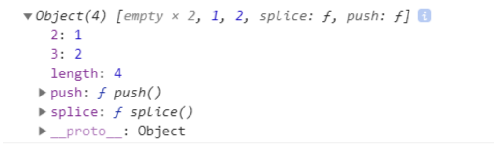
- 解释就是第一次使用
push,obj对象的push方法设置obj[2] = 1,obj.length++ - 解释就是第一次使用
push,obj对象的push方法设置obj[3] = 2,obj.length++ - 使用
console.log()方法输出的时候，因为obj上有length属性和splice方法，故将其作为数组输出打印 - 打印时因为数组未设置下标为0和1的值，故打印的结果就是
empty，主动获取obj[0] = undefined
# 非匿名自执行函数，函数名只读
var b = 10;
(function b(){
// 'use strict'
b = 20
console.log(b)
})()
输出的结果是什么？
答案
Function b
- 如标题一样，非匿名自执行函数，函数名不可以修改，严格模式下会
TypeError， - 非严格模式下，不报错，修改也没有用。
- 查找变量b时,立即执行函数会有内部作用域，会先去查找是否有b变量的声明，有的话，直接复制
- 确实发现具名函数
Function b(){}所以就拿来做b的值 - IIFE的函数内部无法进行复制(类似于const)
非匿名自执行函数2
var b = 10;
(function b(){
// 'use strict'
var b = 20
console.log(window.b)
console.log(b)
})()
输出是多少呢？
答案
10
20
// 访问b变量的时候,发现var b = 20;在当前作用域中找到了b变量，于是把b的值作为20
非匿名自执行函数3
var b = 10;
(function b(){
console.log(b)
b = 5
console.log(window.b)
var b = 20
console.log(b)
})()
输出的结果是多少呢？
# 变量提升
var name = 'World!';
(function () {
if (typeof name === 'undefined') {
var name = 'Jack';
console.log('Goodbye ' + name);
} else {
console.log('Hello ' + name);
}
})();
在 JavaScript中， Fun 和 var 会被提升
相当于
var name = 'World!';
(function () {
var name;
if (typeof name === 'undefined') {
name = 'Jack';
console.log('Goodbye ' + name);
} else {
console.log('Hello ' + name);
}
})();
巩固一下：
var str = 'World!';
(function (name) {
if (typeof name === 'undefined') {
var name = 'Jack';
console.log('Goodbye ' + name);
} else {
console.log('Hello ' + name);
}
})(str);
答案
答案：Hello World 因为name已经变成函数内局部变量
# 数组的原型是什么
Array.isArray( Array.prototype )
这段代码的执行结果？
答案
- 答案：
true - 解析：
Array.prototype是一个数组 - 数组的原型是数组，对象的原型是对象，函数的原型是函数
# 数组比较大小
var a = [1, 2, 3],
b = [1, 2, 3],
c = [1, 2, 4]
a == b
a === b
a > c
a < c
这段代码的执行结果？
答案
- 答案：
false, false, false, true - 解析：相等（==）和全等（===）还是比较引用地址。引用类型间比较大小是按照字典序比较，就是先比第一项谁大，相同再去比第二项。
# 原型
var a = {}, b = Object.prototype;
[a.prototype === b, Object.getPrototypeOf(a) === b]
执行结果是多少呢
- 答案：
false, true - 解析：
Object的实例是 a，a上并没有prototype属性a的__poroto__指向的是Object.prototype，也就是Object.getPrototypeOf(a)。a的原型对象是b
原型II
function f() {}
var a = f.prototype, b = Object.getPrototypeOf(f);
a === b
这段代码的执行结果？
- 答案：false
- 解析：
- a是构造函数f的原型 ：
{constructor: ƒ} - b是实例f的原型对象 ：
ƒ () { [native code] }
- a是构造函数f的原型 ：
# 函数名称
function foo() { }
var oldName = foo.name;
foo.name = "bar";
[oldName, foo.name]
代码执行结果是什么？
- 答案：
["foo", "foo"] - 解析：函数的名字不可变.
# Function.length
var a = Function.length,
b = new Function().length
a === b
这段代码的执行结果是？
- 答案：
false - 解析：
- 首先new在函数带（）时运算优先级和.一样所以从左向右执行
new Function()的函数长度为0
- 巩固：
function fn () {
var a = 1;
}
console.log(fn.length)
//0 fn和new Function()一样
# "b" + "a" + +"a" + "a"
你认为输出是什么？
上面的表达式相当于'b'+'a'+ (+'a')+'a'，因为（+'a'）是NaN，所以：
'b'+'a'+ (+'a')+'a' = 'b'+'a'+ "NaN"+'a'='baNaNa'
# 闭包
这是一个经典JavaScript面试题
let res = new Array()
for(var i = 0; i < 10; i++){
res.push(function(){
return console.log(i)
})
}
res[0]()
res[1]()
res[2]()
期望输出的是0,1,2,实际上却不会。原因就是涉及作用域，怎么解决呢？
- [x] 使用let代替var，形成块级作用域
- [x] 使用bind函数。
res.push(console.log.bind(null, i))
解法还有其他的，比如使用IIFE，形成私有作用域等等做法。
又一经典闭包问题
function fun(n,o) {
console.log(o)
return {
fun:function(m){
return fun(m,n);
}
};
}
var a = fun(0); a.fun(1); a.fun(2); a.fun(3);//undefined,?,?,?
var b = fun(0).fun(1).fun(2).fun(3);//undefined,?,?,?
var c = fun(0).fun(1); c.fun(2); c.fun(3);//undefined,?,?,?
# 隐式转换
var a = [0];
if (a) {
console.log(a == true);
} else {
console.log("wut");
}
你们觉得答案是多少呢？
// 答案：false
再来一道？
function fn() {
return 20;
}
console.log(fn + 10); // 输出结果是多少
function fn() {
return 20;
}
fn.toString = function() {
return 10;
}
console.log(fn + 10); // 输出结果是多少？
function fn() {
return 20;
}
fn.toString = function() {
return 10;
}
fn.valueOf = function() {
return 5;
}
console.log(fn + 10); // 输出结果是多少？
# 一道容易被人轻视的面试题
function Foo() {
getName = function () { alert (1); };
return this;
}
Foo.getName = function () { alert (2);};
Foo.prototype.getName = function () { alert (3);};
var getName = function () { alert (4);};
function getName() { alert (5);}
//请写出以下输出结果：
Foo.getName();
getName();
Foo().getName();
getName();
new Foo.getName();
new Foo().getName();
new new Foo().getName();
# let var
function foo() {
let a = b = 0;
a++;
return a;
}
foo();
typeof a; // => ???
typeof b; // => ???
上面的let a = b = 0; 等价于 window.b = 0, let a = b;
# 眼力题
const length = 4;
const numbers = [];
for (var i = 0; i < length; i++);{
numbers.push(i + 1);
}
numbers; // => ???
唯一需要注意的就是for语句后面带了;沙雕题
加了
;，会认为for执行完，所以指定的都是空语句，最后numbers为[5]
# 第46题 关于0.1+0.2!=0.3浮点数计算分析与解决方法
出现的原因
小数点在计算机中是以二进制表示，而有些小数用二进制表示是无穷，所以才会出现上面这种精确度的问题。 一些浮点数表示成二进制
十进制 二进制
0.1 0.0001 1001 1001 1001 ...
0.2 0.0011 0011 0011 0011 ...
0.3 0.0100 1100 1100 1100 ...
0.4 0.0110 0110 0110 0110 ...
0.5 0.1
0.6 0.1001 1001 1001 1001 ...
运行一下下面代码
输入 输出
0.1+0.05==0.15 FALSE
1-0.1-0.1-0.1==0.7 FALSE
0.3/0.1 == 3 FALSE
1.0-0.6 == 0.4 True
1.0-0.5 == 0.5 True
1.0-0.4 == 0.6 True
1.0-0.3 == 0.7 True
1.0-0.2 == 0.8 True
出现这个问题的原因，其实是因为数值的表示在计算机内部是用二进制的。例如，十进制的0.625，换成二进制表示就是
0.101(1*2-1+0*2-2+1*2-3)。0.625这个数倒还好，刚好可以准确表示出来。但如果是0.1的话呢，换成二进制就是0.00011(0011无限循环)，也就是：0.000110011001100110011001100110011...，位数是无限的，只能取近似。对于这些不能准确表示的数就有可能会出现这个问题。为什么是可能呢？因为有些数的计算结果，例如0.1+0.3，它虽然也是不能精确地表示，但是它结果足够接近0.4，那取了近似后就成了0.4了。
解决方法
使用简单点四舍五入方法，取了一个10位小数
function numTofixed(num) {
if (typeof num === 'number') {
// 01 + 0.2 = 0.30000000000000004 截取小数点后10位。利用parseFloat去掉小数点后面的0
num = parseFloat(num.toFixed(10))
}
return num;
}
numTofixed(0.1 + 0.2);
# 第45题 介绍一下Tree Shaking及其工作原理
Tree shaking是一种通过清除多余代码方式来优化项目打包体积的技术
tree shaking的原理是什么
ES6 Module引入进行静态分析，故而编译的时候正确判断到底加载了那些模块- 静态分析程序流，判断那些模块和变量未被使用或者引用，进而删除对应代码
common.js 和 es6 中模块引入的区别
CommonJS 是一种模块规范，最初被应用于 Nodejs，成为 Nodejs 的模块规范。运行在浏览器端的 JavaScript 由于也缺少类似的规范，在 ES6 出来之前，前端也实现了一套相同的模块规范 (例如:
AMD)，用来对前端模块进行管理。自 ES6 起，引入了一套新的ES6 Module规范，在语言标准的层面上实现了模块功能，而且实现得相当简单，有望成为浏览器和服务器通用的模块解决方案。但目前浏览器对ES6 Module兼容还不太好，我们平时在Webpack中使用的export和import，会经过Babel转换为 CommonJS 规范。在使用上的差别主要有
CommonJS模块输出的是一个值的拷贝，ES6 模块输出的是值的引用。CommonJS模块是运行时加载，ES6 模块是编译时输出接口。CommonJs是单个值导出，ES6 Module可以导出多个CommonJs是动态语法可以写在判断里，ES6 Module静态语法只能写在顶层CommonJs的this是当前模块，ES6 Module的this是undefined
# 第44题 执行new Vue干了什么
- 当我们写下这段简单
new Vue()代码，vue框架做了什么呢?
var vm = new Vue({
el:"#app",
data:{
msg:'this is msg'
}
}
)
- 调用
src/core/instance/index.js的Vue构造方法
function Vue (options) {
if (process.env.NODE_ENV !== 'production' &&
!(this instanceof Vue)
) {
warn('Vue is a constructor and should be called with the `new` keyword')
}
//执行初始化方法，initMixin的时候，在vue原型上挂载了 _init方法
this._init(options)
}
// 执行初始化的工作
initMixin(Vue)
stateMixin(Vue)
eventsMixin(Vue)
lifecycleMixin(Vue)
renderMixin(Vue)
export default Vue
- 接下来调用原型上面
_init方法，是我们要重点分析的，其入参options就是我们定义的对象时传入的参数对象 - 执行内部初始化方法，首先是
options的合并，之后是一堆init方法 - 对
options进行合并，vue会将相关的属性和方法都统一放到vm.$options中，为后续的调用做准备工作。vm.$option的属性来自两个方面，一个是Vue的构造函数(vm.constructor)预先定义的，一个是new Vue时传入的入参对象。合并完成后的options属性包括：
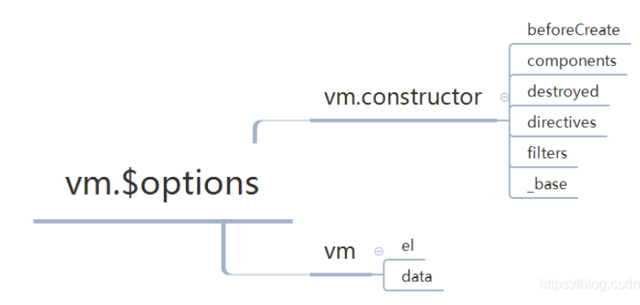
- 初始化各类属性和事件
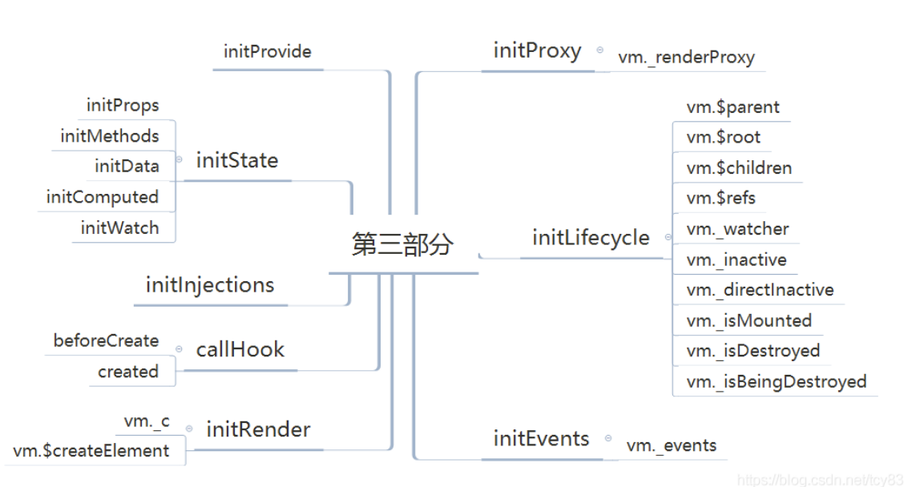
- 挂载。如果说前面几部分都是准备阶段，那么这部分是整个
new Vue的核心部分，将template编译成render表达式，然后转化为大名鼎鼎的Vnode，最终渲染为真实的dom节点
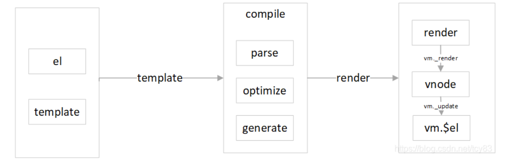
// _init()的实现在src/core/instance/init.js中
Vue.prototype._init = function (options) {
// 第一部分 初始化属性
var vm = this;
// a uid
vm._uid = uid$3++;
var startTag, endTag;
/* istanbul ignore if */
if (process.env.NODE_ENV !== 'production' && config.performance && mark) {
startTag = "vue-perf-start:" + (vm._uid);
endTag = "vue-perf-end:" + (vm._uid);
mark(startTag);
}
// a flag to avoid this being observed
vm._isVue = true;
// 第二部分 合并相关option merge options
if (options && options._isComponent) {
// optimize internal component instantiation
// since dynamic options merging is pretty slow, and none of the
// internal component options needs special treatment.
initInternalComponent(vm, options);
} else {
vm.$options = mergeOptions(
resolveConstructorOptions(vm.constructor),
options || {},
vm
);
}
// 第三部分，初始化各类属性和事件
/* istanbul ignore else */
if (process.env.NODE_ENV !== 'production') {
initProxy(vm);
} else {
vm._renderProxy = vm;
}
// expose real self
vm._self = vm;
initLifecycle(vm);
initEvents(vm);
initRender(vm);
callHook(vm, 'beforeCreate');
initInjections(vm); // resolve injections before data/props
initState(vm);
initProvide(vm); // resolve provide after data/props
callHook(vm, 'created');
/* istanbul ignore if */
if (process.env.NODE_ENV !== 'production' && config.performance && mark) {
vm._name = formatComponentName(vm, false);
mark(endTag);
measure(("vue " + (vm._name) + " init"), startTag, endTag);
}
if (vm.$options.el) {
// 第四部分 挂载节点
vm.$mount(vm.$options.el);
}
};
我们在内部能执行
this.msg的原因是vm._data代理返回
function initData (vm: Component) {
let data = vm.$options.data
data = vm._data = typeof data === 'function'
? getData(data, vm)
: data || {}
if (!isPlainObject(data)) {
data = {}
process.env.NODE_ENV !== 'production' && warn(
'data functions should return an object:\n' +
'https://vuejs.org/v2/guide/components.html#data-Must-Be-a-Function',
vm
)
}
// proxy data on instance
const keys = Object.keys(data)
const props = vm.$options.props
const methods = vm.$options.methods
let i = keys.length
while (i--) {
const key = keys[i]
if (process.env.NODE_ENV !== 'production') {
if (methods && hasOwn(methods, key)) {
warn(
`Method "${key}" has already been defined as a data property.`,
vm
)
}
}
if (props && hasOwn(props, key)) {
process.env.NODE_ENV !== 'production' && warn(
`The data property "${key}" is already declared as a prop. ` +
`Use prop default value instead.`,
vm
)
} else if (!isReserved(key)) {
// 使我们能执行this.msg
proxy(vm, `_data`, key)
}
}
// observe data
observe(data, true /* asRootData */)
}
function proxy (target: Object, sourceKey: string, key: string) {
sharedPropertyDefinition.get = function proxyGetter () {
// 执行this.msg 被代理到this._data上面
return this[sourceKey][key]
}
sharedPropertyDefinition.set = function proxySetter (val) {
this[sourceKey][key] = val
}
Object.defineProperty(target, key, sharedPropertyDefinition)
}
Vue初始化主要就干了几件事情，合并配置，初始化生命周期，初始化事件中心，初始化渲染，初始化data、props、computed、watcher等
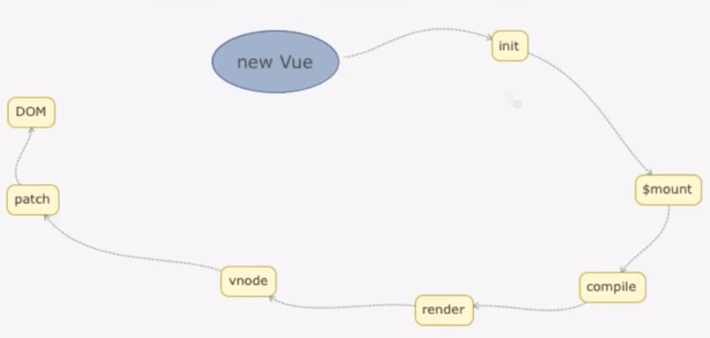
# 第43题 说一下vue2.x中如何监测数组变化
使用了函数劫持的方式，重写了数组的方法，
Vue将data中的数组进行了原型链重写，指向了自己定义的数组原型方法。这样当调用数组api时，可以通知依赖更新。如果数组中包含着引用类型，会对数组中的引用类型再次递归遍历进行监控。这样就实现了监测数组变化。
// 源码实现
/*
* not type checking this file because flow doesn't play well with
* dynamically accessing methods on Array prototype
*/
/**
* Define a property.
*/
export function def (obj: Object, key: string, val: any, enumerable?: boolean) {
Object.defineProperty(obj, key, {
value: val,
enumerable: !!enumerable,
writable: true,
configurable: true
})
}
const arrayProto = Array.prototype
const arrayMethods = Object.create(arrayProto)
/**
* Intercept mutating methods and emit events
*/
;[
'push',
'pop',
'shift',
'unshift',
'splice',
'sort',
'reverse'
]
.forEach(function (method) {
// cache original method
const original = arrayProto[method]
def(arrayMethods, method, function mutator (...args) {
const result = original.apply(this, args)
const ob = this.__ob__
let inserted
switch (method) {
case 'push':
case 'unshift':
inserted = args
break
case 'splice':
inserted = args.slice(2)
break
}
if (inserted) ob.observeArray(inserted)
// notify change
ob.dep.notify()
return result
})
})
# 第42题 介绍 HTTPS 握手过程
- 客户端使用
https的url访问web服务器,要求与服务器建立ssl连接 web服务器收到客户端请求后, 会将网站的证书(包含公钥)传送一份给客户端- 客户端收到网站证书后会检查证书的颁发机构以及过期时间, 如果没有问题就随机产生一个秘钥
- 客户端利用公钥将会话秘钥加密, 并传送给服务端, 服务端利用自己的私钥解密出会话秘钥
- 之后服务器与客户端使用秘钥加密传输
HTTPS 握手过程中，客户端如何验证证书的合法性
- 首先浏览器读取证书中的证书所有者、有效期等信息进行一一校验。
- 浏览器开始查找操作系统中已内置的受信任的证书发布机构 CA，与服务器发来的证书中的颁发者 CA 比对，用于校验证书是否为合法机构颁发。
- 如果找不到，浏览器就会报错，说明服务器发来的证书是不可信任的。如果找到，那么浏览器就会从操作系统中取出颁发者 CA 的公钥，然后对服务器发来的证书里面的签名进行解密。
- 浏览器使用相同的 Hash 算法根据证书内容计算出信息摘要，将这个计算的值与证书解密的值做对比。
- 对比结果一致，则证明服务器发来的证书合法，没有被冒充。此时浏览器就可以读取证书中的公钥，用于后续加密了。
HTTPS 原理一览图
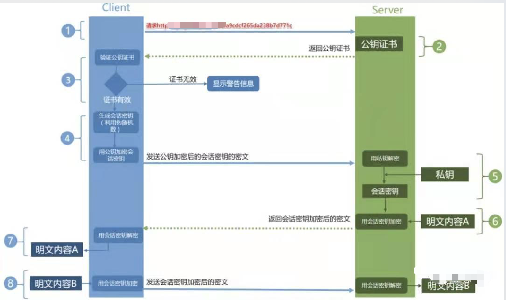
# 第41题 解释以下代码输出什么
var obj = {
'2': 3,
'3': 4,
'length': 2,
'splice': Array.prototype.splice,
'push': Array.prototype.push
}
obj.push(1)
obj.push(2)
console.log(obj)
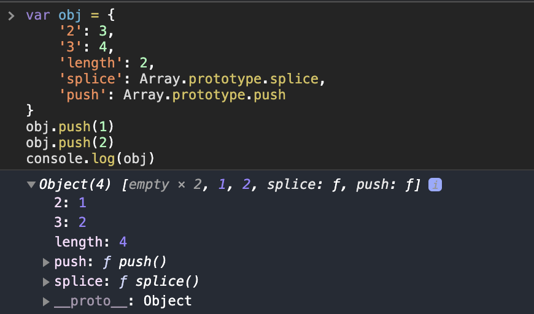
push方法有意具有通用性。该方法和call()或apply()一起使用时，可应用在类似数组的对象上。push方法根据length属性来决定从哪里开始插入给定的值。如果length不能被转成一个数值，则插入的元素索引为0，包括length不存在时。当length不存在时，将会创建它- 调用push方法的时候会在调用对象的
key=length的地方做一个赋值，不管前面key有没有值，也就是说在调用push的时候 对象实际被理解为了[0:undefined,1:undefined,2:3,3:4] - 这个对象如果有
push和splice会输出会转换为数组
# 第40题 实现 (5).add(3).minus(2) 功能
例： 5 + 3 - 2，结果为 6
(function() {
function add(val) {
if(typeof val !== 'number' || Number.isNaN(val)) throw TypeError('请输入数字')
return this + val
}
function minus(val) {
if(typeof val !== 'number' || Number.isNaN(val)) throw TypeError('请输入数字')
return this - val
}
Number.prototype.add = add
Number.prototype.minus = minus
})()
# 第39题 React setState 笔试题，下面的代码输出什么？
import React from 'react'
class Example extends React.Component {
constructor() {
super();
this.state = {
val: 0
};
}
componentDidMount() {
this.setState({val: this.state.val + 1});
console.log(this.state.val); // 第 1 次 log
this.setState({val: this.state.val + 1});
console.log(this.state.val); // 第 2 次 log
setTimeout(() => {
this.setState({val: this.state.val + 1});
console.log(this.state.val); // 第 3 次 log
this.setState({val: this.state.val + 1});
console.log(this.state.val); // 第 4 次 log
}, 0);
}
render() {
return null;
}
};
// 0
// 0
// 2
// 3
# 第38题 （头条）异步笔试题
请写出下面代码的运行结果
async function async1() {
console.log('async1 start');
await async2();
console.log('async1 end');
}
async function async2() {
console.log('async2');
}
console.log('script start');
setTimeout(function() {
console.log('setTimeout');
}, 0)
async1();
new Promise(function(resolve) {
console.log('promise1');
resolve();
}).then(function() {
console.log('promise2');
});
console.log('script end');
// script start
// async1 start
// async2
// promise1
// script end
// async1 end
// promise2
// setTimeout
# 第37题 实现ES6的class
js 的完美继承是寄生组合继承
// Parent
function Parent(name) {
this.name = name
}
Parent.prototype.sayName = function () {
console.log(this.name)
};
// Child
function Child(age, name) {
Parent.call(this, name)
this.age = age
}
Child.prototype = Object.create(Parent.prototype) // 原型拷贝
Child.prototype.constructor = Child // 重置子类constructor，否则子类实例constructor将指向Parent
Child.prototype.sayAge = function () {
console.log(this.age)
}
// 测试
const child = new Child(20, 'poetry')
child.sayName()
child.sayAge()
# 第36题 实现一个柯里化函数
预先处理的思想，利用闭包的机制
- 柯里化的定义：接收一部分参数，返回一个函数接收剩余参数，接收足够参数后，执行原函数。
- 函数柯里化的主要作用和特点就是
参数复用、提前返回和延迟执行。
- 柯里化把多次传入的参数合并，柯里化是一个高阶函数
- 每次都返回一个新函数
- 每次入参都是一个
// 分批传入参数
// redux 源码的compose也是用了类似柯里化的操作
const curry = (fn, arr = []) => {// arr就是我们要收集每次调用时传入的参数
let len = fn.length; // 函数的长度，就是参数的个数
return function(...args) {
let newArgs = [...arr, ...args] // 收集每次传入的参数
// 如果传入的参数个数等于我们指定的函数参数个数，就执行指定的真正函数
if(newArgs.length === len) {
return fn(...newArgs)
} else {
// 递归收集参数
return curry(fn, newArgs)
}
}
}
简洁写法
const curry = (fn, arr = []) => (...args) =>
((arg) => (arg.length === fn.length ? fn(...arg) : curry(fn, arg)))([
...arr,
...args,
]);
// 柯里化求职
// 指定的函数
function sum(a,b,c,d,e) {
return a + b + c + d + e
}
// 传入指定的函数，执行一次
let newSum = curry(sum)
// 柯里化 每次入参都是一个参数
newSum(1)(2)(3)(4)(5)
// 偏函数
newSum(1)(2)(3,4,5)
// 柯里化简单应用
// 判断类型，参数多少个，就执行多少次收集
function isType(type, val) {
return Object.prototype.toString.call(val) === `[object ${type}]`
}
let newType = curry(isType)
// 相当于把函数参数一个个传了，把第一次先缓存起来
let isString = newType('String')
let isNumber = newType('Number')
isString('hello world')
isNumber(999)
# 第35题 实现一个简易的MVVM
实现一个简易的
MVVM我会分为这么几步来：
- 首先我会定义一个类
Vue，这个类接收的是一个options，那么其中可能有需要挂载的根元素的id，也就是el属性；然后应该还有一个data属性，表示需要双向绑定的数据 - 其次我会定义一个
Dep类，这个类产生的实例对象中会定义一个subs数组用来存放所依赖这个属性的依赖，已经添加依赖的方法addSub，删除方法removeSub，还有一个notify方法用来遍历更新它subs中的所有依赖，同时Dep类有一个静态属性target它用来表示当前的观察者，当后续进行依赖收集的时候可以将它添加到dep.subs中。 - 然后设计一个
observe方法，这个方法接收的是传进来的data，也就是options.data，里面会遍历data中的每一个属性，并使用Object.defineProperty()来重写它的get和set，那么这里面呢可以使用new Dep()实例化一个dep对象，在get的时候调用其addSub方法添加当前的观察者Dep.target完成依赖收集，并且在set的时候调用dep.notify方法来通知每一个依赖它的观察者进行更新 - 完成这些之后，我们还需要一个
compile方法来将HTML模版和数据结合起来。在这个方法中首先传入的是一个node节点，然后遍历它的所有子级，判断是否有firstElmentChild，有的话则进行递归调用compile方法，没有firstElementChild的话且该child.innderHTML用正则匹配满足有/\{\{(.*)\}\}/项的话则表示有需要双向绑定的数据，那么就将用正则new Reg('\\{\\{\\s*' + key + '\\s*\\}\\}', 'gm')替换掉是其为msg变量。 - 完成变量替换的同时，还需要将
Dep.target指向当前的这个child，且调用一下this.opt.data[key]，也就是为了触发这个数据的get来对当前的child进行依赖收集，这样下次数据变化的时候就能通知child进行视图更新了，不过在最后要记得将Dep.target指为null哦(其实在Vue中是有一个targetStack栈用来存放target的指向的) - 那么最后我们只需要监听
document的DOMContentLoaded然后在回调函数中实例化这个Vue对象就可以了
coding:
需要注意的点：
childNodes会获取到所有的子节点以及文本节点(包括元素标签中的空白节点)firstElementChild表示获取元素的第一个字元素节点，以此来区分是不是元素节点，如果是的话则调用compile进行递归调用，否则用正则匹配- 这里面的正则真的不难，大家可以看一下
完整代码如下：
<!DOCTYPE html>
<html lang="en">
<head>
<meta charset="UTF-8" />
<meta name="viewport" content="width=device-width, initial-scale=1.0" />
<meta http-equiv="X-UA-Compatible" content="ie=edge" />
<title>MVVM</title>
</head>
<body>
<div id="app">
<h3>姓名</h3>
<p>{{name}}</p>
<h3>年龄</h3>
<p>{{age}}</p>
</div>
</body>
</html>
<script>
document.addEventListener(
"DOMContentLoaded",
function () {
let opt = { el: "#app", data: { name: "等待修改...", age: 20 } };
let vm = new Vue(opt);
setTimeout(() => {
opt.data.name = "jing";
}, 2000);
},
false
);
class Vue {
constructor(opt) {
this.opt = opt;
this.observer(opt.data);
let root = document.querySelector(opt.el);
this.compile(root);
}
observer(data) {
Object.keys(data).forEach((key) => {
let obv = new Dep();
data["_" + key] = data[key];
Object.defineProperty(data, key, {
get() {
Dep.target && obv.addSubNode(Dep.target);
return data["_" + key];
},
set(newVal) {
obv.update(newVal);
data["_" + key] = newVal;
},
});
});
}
compile(node) {
[].forEach.call(node.childNodes, (child) => {
if (!child.firstElementChild && /\{\{(.*)\}\}/.test(child.innerHTML)) {
let key = RegExp.$1.trim();
child.innerHTML = child.innerHTML.replace(
new RegExp("\\{\\{\\s*" + key + "\\s*\\}\\}", "gm"),
this.opt.data[key]
);
Dep.target = child;
this.opt.data[key];
Dep.target = null;
} else if (child.firstElementChild) this.compile(child);
});
}
}
class Dep {
constructor() {
this.subNode = [];
}
addSubNode(node) {
this.subNode.push(node);
}
update(newVal) {
this.subNode.forEach((node) => {
node.innerHTML = newVal;
});
}
}
</script>
# 第34题 实现一下hash路由
基础的html代码：
<html>
<style>
html, body {
margin: 0;
height: 100%;
}
ul {
list-style: none;
margin: 0;
padding: 0;
display: flex;
justify-content: center;
}
.box {
width: 100%;
height: 100%;
background-color: red;
}
</style>
<body>
<ul>
<li>
<a href="#red">红色</a>
</li>
<li>
<a href="#green">绿色</a>
</li>
<li>
<a href="#purple">紫色</a>
</li>
</ul>
</body>
</html>
简单实现：
<script>
const box = document.getElementsByClassName('box')[0];
const hash = location.hash
window.onhashchange = function (e) {
const color = hash.slice(1)
box.style.background = color
}
</script>
封装成一个class:
<script>
const box = document.getElementsByClassName('box')[0];
const hash = location.hash
class HashRouter {
constructor (hashStr, cb) {
this.hashStr = hashStr
this.cb = cb
this.watchHash()
this.watch = this.watchHash.bind(this)
window.addEventListener('hashchange', this.watch)
}
watchHash () {
let hash = window.location.hash.slice(1)
this.hashStr = hash
this.cb(hash)
}
}
new HashRouter('red', (color) => {
box.style.background = color
})
</script>
# 第33题 实现一个发布订阅者模式
简介：
发布订阅者模式，一种对象间一对多的依赖关系，但一个对象的状态发生改变时，所依赖它的对象都将得到状态改变的通知。
主要的作用(优点)：
- 广泛应用于异步编程中(替代了传递回调函数)
- 对象之间松散耦合的编写代码
缺点：
- 创建订阅者本身要消耗一定的时间和内存
- 多个发布者和订阅者嵌套一起的时候，程序难以跟踪维护
实现的思路：
- 创建一个对象(缓存列表)
- on方法用来把回调函数fn都加到缓存列表中
- emit方法取到arguments里第一个当做key，根据key值去执行对应缓存列表中的函数
- remove方法可以根据key值取消订阅
coding：
let event = {
list: {},
on (key, fn) {
if (!this.list[key]) {
this.list[key] = [];
}
this.list[key].push(fn);
},
emit () {
let key = [].shift.call(arguments),
fns = this.list[key];
if (!fns || fns.length <= 0) {
return false;
}
fns.forEach(fn => {
fn.apply(this, arguments);
})
},
remove (key, fn) {
let fns = this.list[key];
if (!fns || fns.length <= 0) {
return false;
}
if (!fn) {
fns && (fns.length = 0);
} else {
fns.forEach((cb, i) => {
if (cb === fn) {
fns.splice(i, 1);
}
})
}
}
}
function cat () {
console.log('喵喵喵～');
}
function dog () {
console.log('汪汪汪～');
}
function hasArgs (args) {
console.log(args);
}
event.on('pet', hasArgs);
event.on('pet', cat);
event.on('pet', dog);
event.remove('pet', dog)
event.emit('pet', '我是传递的参数');
// 结果：
// '我是传递的参数'
// '喵喵喵～'
工作中的应用：
- 插广告
- 打点
# 发布订阅者模式和观察者模式的区别？
- 发布/订阅模式是观察者模式的一种变形，两者区别在于，发布/订阅模式在观察者模式的基础上，在目标和观察者之间增加一个调度中心。
- 观察者模式是由具体目标调度，比如当事件触发，Subject 就会去调用观察者的方法，所以观察者模式的订阅者与发布者之间是存在依赖的。
- 发布/订阅模式由统一调度中心调用，因此发布者和订阅者不需要知道对方的存在。
# 第32题 关于async/await代码执行顺序
function wait (delay) {
return new Promise(r => {
setTimeout(() => {
r('execute', console.log('execute'))
}, delay)
})
}
// async function series () { // 1
// await wait(500);
// await wait(500);
// console.log('done')
// }
async function series () { // 2
const wait1 = wait(500)
const wait2 = wait(500)
await wait1;
await wait2;
console.log('done')
}
series()
- 第一个
series():
// 1. 500ms后
'execute'
// 2. 500ms后
'execute' 和 'done' 一起打印
- 第二个
series:
// 500ms后同时打印出
'execute'
'execute'
'done'
# 第31题 实现一个padStart()或padEnd()的polyfill
String.prototype.padStart 和 String.prototype.padEnd是ES8中新增的方法，允许将空字符串或其他字符串添加到原始字符串的开头或结尾。我们先看下使用语法：
String.padStart(targetLength,[padString])
用法：
'x'.padStart(4, 'ab') // 'abax'
'x'.padEnd(5, 'ab') // 'xabab'
// 1. 若是输入的目标长度小于字符串原本的长度则返回字符串本身
'xxx'.padStart(2, 's') // 'xxx'
// 2. 第二个参数的默认值为 " "，长度是为1的
// 3. 而此参数可能是个不确定长度的字符串，若是要填充的内容达到了目标长度，则将不要的部分截取
'xxx'.padStart(5, 'sss') // ssxxx
// 4. 可用来处理日期、金额格式化问题
'12'.padStart(10, 'YYYY-MM-DD') // "YYYY-MM-12"
'09-12'.padStart(10, 'YYYY-MM-DD') // "YYYY-09-12"
polyfill实现：
String.prototype.myPadStart = function (targetLen, padString = " ") {
if (!targetLen) {
throw new Error('请输入需要填充到的长度');
}
let originStr = String(this); // 获取到调用的字符串, 因为this原本是String{}，所以需要用String转为字符串
let originLen = originStr.length; // 调用的字符串原本的长度
if (originLen >= targetLen) return originStr; // 若是 原本 > 目标 则返回原本字符串
let diffNum = targetLen - originLen; // 10 - 6 // 差值
for (let i = 0; i < diffNum; i++) { // 要添加几个成员
for (let j = 0; j < padString.length; j++) { // 输入的padString的长度可能不为1
if (originStr.length === targetLen) break; // 判断每一次添加之后是否到了目标长度
originStr = `${padString[j]}${originStr}`;
}
if (originStr.length === targetLen) break;
}
return originStr;
}
console.log('xxx'.myPadStart(16))
console.log('xxx'.padStart(16))
还是比较简单的，而padEnd的实现和它一样，只需要把第二层for循环里的${padString[j]}${orignStr}换下位置就可以了。
# 第30题 设计一个方法提取对象中所有value大于2的键值对并返回最新的对象
实现：
var obj = { a: 1, b: 3, c: 4 }
foo(obj) // { b: 3, c: 4 }
方法有很多种，这里提供一种比较简洁的写法，用到了ES10的Object.fromEntries()：
var obj = { a: 1, b: 3, c: 4 }
function foo (obj) {
return Object.fromEntries(
Object.entries(obj).filter(([key, value]) => value > 2)
)
}
var obj2 = foo(obj) // { b: 3, c: 4 }
console.log(obj2)
// ES8中 Object.entries()的作用：
var obj = { a: 1, b: 2 }
var entries = Object.entries(obj); // [['a', 1], ['b', 2]]
// ES10中 Object.fromEntries()的作用：
Object.fromEntries(entries); // { a: 1, b: 2 }
# 第29题 用一个正则提取字符串中所有""里内容
// 如果只是简单的没有循环遍历的话，就只能拿到一个：
function collectGroup (str) {
let regExp = /"([^"]*)"/g;
let match = regExp.exec(str); // [""foo"", "foo"]
return match[1]; // "foo"
}
var str = `"foo" and "bar" and "baz"`
console.log(collectGroup(str)) // "foo"
// 第一种方案：使用while循环遍历
function collectGroup (str) {
let regExp = /"([^"]*)"/g;
const matches = [];
while (true) {
let match = regExp.exec(str)
if (match === null) break;
matches.push(match[1])
}
return matches
}
var str = `"foo" and "bar" and "baz"`
console.log(collectGroup(str))
// 第二种方案：使用ES10的matchAll()
function collectGroup (str) {
let regExp = /"([^"]*)"/g;
const matches = []
for (const match of str.matchAll(regExp)) {
matches.push(match[1])
}
return matches
}
var str = `"foo" and "bar" and "baz"`
console.log(collectGroup(str))
# 第28题 去除字符串首位空格
第一种：正则匹配首位空格并去除：
function trim (str) {
return str.replace(/(^\s+)|(\s+$)/g, '')
}
console.log(trim(' 11 ')) // '11'
console.log(trim(' 1 1 ')) // '1 1'
第二种：使用ES10中的trimStart和trimEnd：
function trim (str) {
str = str.trimStart()
return str.trimEnd()
}
console.log(trim(' 11 ')) // '11'
console.log(trim(' 1 1 ')) // '1 1'
第三种：使用Vue中的修饰符.trim:
<input v-model.trim="msg" />
考察知识点：
- 正则的相关知识
- 是否知道
ES10新出的两个去除空白字符的方法 - 是否知道实际运用中有什么简便的方法(
react用的不是很多，搜索了一下好像也没有看到类似Vue的修饰符，给出的解决方案是封装一个高阶组件)
注意点：
- 正则
^如果不是放在[]里的话就是表示从头开始匹配； \s用于匹配一个空白字符，而\S用于匹配一个非空字符+表示匹配前面的模式 x 1 或多次。等价于{1,}。$匹配结尾
# 第27题 用正则写一个根据name获取cookie中的值的方法
function getCookie(name) {
var match = document.cookie.match(new RegExp('(^| )' + name + '=([^;]*)'));
if (match) return unescape(match[2]);
}
- 获取页面上的
cookie可以使用document.cookie
这里获取到的是类似于这样的字符串：
'username=poetry; user-id=12345; user-roles=home, me, setting'
可以看到这么几个信息：
- 每一个cookie都是由
name=value这样的形式存储的 - 每一项的开头可能是一个空串
''(比如username的开头其实就是), 也可能是一个空字符串' '（比如user-id的开头就是） - 每一项用
";"来区分 - 如果某项中有多个值的时候，是用
","来连接的(比如user-roles的值) - 每一项的结尾可能是有
";"的(比如username的结尾)，也可能是没有的(比如user-roles的结尾)
- 所以我们将这里的正则拆分一下：
'(^| )'表示的就是获取每一项的开头，因为我们知道如果^不是放在[]里的话就是表示开头匹配。所以这里(^| )的意思其实就被拆分为(^)表示的匹配username这种情况，它前面什么都没有是一个空串(你可以把(^)理解为^它后面还有一个隐藏的'')；而|表示的就是或者是一个" "(为了匹配user-id开头的这种情况)+name+这没什么好说的=([^;]*)这里匹配的就是=后面的值了，比如poetry；刚刚说了^要是放在[]里的话就表示"除了^后面的内容都能匹配"，也就是非的意思。所以这里([^;]*)表示的是除了";"这个字符串别的都匹配(*应该都知道什么意思吧，匹配0次或多次)- 有的大佬等号后面是这样写的
'=([^;]*)(;|$)'，而最后为什么可以把'(;|$)'给省略呢？因为其实最后一个cookie项是没有';'的，所以它可以合并到=([^;]*)这一步。
- 最后获取到的
match其实是一个长度为4的数组。比如：
[
"username=poetry;",
"",
"poetry",
";"
]
- 第0项：全量
- 第1项：开头
- 第2项：中间的值
- 第3项：结尾
所以我们是要拿第2项match[2]的值。
- 为了防止获取到的值是
%xxx这样的字符序列，需要用unescape()方法解码。
# 第26题 实现 arr[-1] = arr[arr.length - 1]
function createArr (...elements) {
let handler = {
get (target, key, receiver) { // 第三个参数传不传都可以
let index = Number(key)
if (index < 0) {
index = String(target.length + index)
}
return Reflect.get(target, index, receiver)
}
}
let target = []
target.push(...elements)
return new Proxy(target, handler)
}
var arr1 = createArr(1, 2, 3)
console.log(arr1[-1]) // 3
console.log(arr1[-2]) // 2
# 第25题 JSONP的原理并用代码实现
基本原理：主要就是利用
script标签的src属性没有跨域的限制，通过指向一个需要访问的地址，由服务端返回一个预先定义好的Javascript函数的调用，并且将服务器数据以该函数参数的形式传递过来，此方法需要前后端配合完成。
执行过程：
- 前端定义一个解析函数(如:
jsonpCallback = function (res) {}) - 通过
params的形式包装script标签的请求参数，并且声明执行函数(如cb=jsonpCallback) - 后端获取到前端声明的执行函数(
jsonpCallback)，并以带上参数且调用执行函数的方式传递给前端 - 前端在
script标签返回资源的时候就会去执行jsonpCallback并通过回调函数的方式拿到数据了。
缺点：
- 只能进行
GET请求
优点：
- 兼容性好，在一些古老的浏览器中都可以运行
代码实现：
<script>
function JSONP({
url,
params = {},
callbackKey = 'cb',
callback
}) {
// 定义本地的唯一callbackId，若是没有的话则初始化为1
JSONP.callbackId = JSONP.callbackId || 1;
let callbackId = JSONP.callbackId;
// 把要执行的回调加入到JSON对象中，避免污染window
JSONP.callbacks = JSONP.callbacks || [];
JSONP.callbacks[callbackId] = callback;
// 把这个名称加入到参数中: 'cb=JSONP.callbacks[1]'
params[callbackKey] = `JSONP.callbacks[${callbackId}]`;
// 得到'id=1&cb=JSONP.callbacks[1]'
const paramString = Object.keys(params).map(key => {
return `${key}=${encodeURIComponent(params[key])}`
}).join('&')
// 创建 script 标签
const script = document.createElement('script');
script.setAttribute('src', `${url}?${paramString}`);
document.body.appendChild(script);
// id自增，保证唯一
JSONP.callbackId++;
}
JSONP({
url: 'http://localhost:8080/api/jsonps',
params: {
a: '2&b=3',
b: '4'
},
callbackKey: 'cb',
callback (res) {
console.log(res)
}
})
JSONP({
url: 'http://localhost:8080/api/jsonp',
params: {
id: 1
},
callbackKey: 'cb',
callback (res) {
console.log(res)
}
})
</script>
# 第24题 实现一个拖拽
<style>
html, body {
margin: 0;
height: 100%;
}
#box {
width: 100px;
height: 100px;
background-color: red;
position: absolute;
top: 100px;
left: 100px;
}
</style>
<div id="box"></div>
window.onload = function () {
var box = document.getElementById('box');
box.onmousedown = function (ev) {
var oEvent = ev || window.event; // 兼容火狐,火狐下没有window.event
var distanceX = oEvent.clientX - box.offsetLeft; // 鼠标到可视区左边的距离 - box到页面左边的距离
var distanceY = oEvent.clientY - box.offsetTop;
document.onmousemove = function (ev) {
var oEvent = ev || window.event;
var left = oEvent.clientX - distanceX;
var top = oEvent.clientY - distanceY;
if (left <= 0) {
left = 0;
} else if (left >= document.documentElement.clientWidth - box.offsetWidth) {
left = document.documentElement.clientWidth - box.offsetWidth;
}
if (top <= 0) {
top = 0;
} else if (top >= document.documentElement.clientHeight - box.offsetHeight) {
top = document.documentElement.clientHeight - box.offsetHeight;
}
box.style.left = left + 'px';
box.style.top = top + 'px';
}
box.onmouseup = function () {
document.onmousemove = null;
box.onmouseup = null;
}
}
}
# 第23题 项目中你做过哪些优化
# 功能点的实现上
- 对动态表单下拉框的内容查询提出建议。原先请求一个动态表单的页面，后台会一次性把很多的下拉列表都带出来数据量很大。后我提出意见，第一次获取的时候后台可以只返回当前选项的键值对，当用户点击下拉框的时候我才获取数据。
- 列表中图片懒加载。因为我们项目中不考虑兼容性，所以我们直接就用了
img标签的loading="lazy"实现图片懒加载，但是如果要考虑兼容性的话，可能需要用监听window.scroll然后通过获取要懒加载图片距离可是窗口顶部的距离来判断需不需要加载。
一些需要根据用户输入的信息实时查询的输入框，需要做防抖处理
# 项目的构建上
- 先使用
webpack-bundle-analyzer分析打包后整个项目中的体积结构，既可以看到项目中用到的所有第三方包，又能看到各个模块在整个项目中的占比。 Vue路由懒加载，使用() => import(xxx.vue)形式，打包会根据路由自动拆分打包。- 第三方库按需加载，例如
lodash库、UI组件库 - 使用
purgecss-webpack-plugin和glob插件去除无用样式(glob插件可以可以同步查找目录下的任意文件夹下的任意文件)：
new PurgecssWebpackPlugin({
// paths表示指定要去解析的文件名数组路径
// Purgecss会去解析这些文件然后把无用的样式移除
paths: glob.sync('./src/**/*', {nodir: true})
// glob.sync同步查找src目录下的任意文件夹下的任意文件
// 返回一个数组，如['真实路径/src/css/style.css','真实路径/src/index.js',...]
})
文件解析优化：
babel-loader编译慢，可以通过配置exclude来去除一些不需要编译的文件夹，还可以通过设置cacheDirectory开启缓存，转译的结果会被缓存到文件系统中- 文件解析优化：通过配置
resolve选项中的alias。alias创建import或者require的别名，加快webpack查找速度。
使用
webpack自带插件IgnorePlugin忽略moment目录下的locale文件夹使打包后体积减少278k- 问题原因：使用
moment时发现会把整个locale语言包都打包进去导致打包体积过大，但是我们只需要用到中文包 - 在
webpack配置中使用webpack自带的插件IgnorePlugin忽略moment目录下的locale文件夹 - 之后在项目中引入：
// index.js // 利用IgnorePlugin把只需要的语言包导入使用就可以了，省去了一下子打包整个语言包 import moment from 'moment'; // 单独导入中文语言包 import 'moment/locale/zh-cn';- 问题原因：使用
使用
splitChunks进行拆包，抽离公共模块，一些常用配置项：chunks:表示选择哪些chunks进行分割，可选值有：async，initial和allminSize: 表示新分离出的chunk必须大于等于minSize，默认为30000，约30kbminChunks: 表示一个模块至少应被minChunks个chunk所包含才能分割，默认为1name: 设置chunk的文件名cacheGroups: 可以配置多个组，每个组根据test设置条件，符合test条件的模块，就分配到该组。模块可以被多个组引用，但最终会根据priority来决定打包到哪个组中。默认将所有来自 node_modules目录的模块打包至vendors组，将两个以上的chunk所共享的模块打包至default组。
DllPlugin动态链接库，将第三方库的代码和业务代码抽离：- 根目录下创建一个
webpack.dll.js文件用来打包出dll文件。并在package.json中配置dll指令生成dll文件夹，里面就会有manifest.json以及生成的xxx.dll.js文件 - 将打包的
dll通过add-asset-html-webpack-plugin添加到html中，再通过DllReferencePlugin把dll引用到需要编译的依赖。
- 根目录下创建一个
在
ngnix上开启gzip压缩。
# 网络缓存上
- 对于一些没有指纹信息的资源，例如
index.html可以使用Cache-Control: no-cache开启协商缓存 - 对于带有指纹信息的资源，一般会使用
splitChunksPlugin进行代码分割，来保证造成最小范围的缓存失效，再设置Cache-Control: max-age=3153600
# 第22题 手写Promise最简20行版本，实现异步链式调用
# 实现代码
function Promise(fn) {
this.cbs = [];
const resolve = (value) => {
setTimeout(() => {
this.data = value;
this.cbs.forEach((cb) => cb(value));
});
}
fn(resolve.bind(this));
}
Promise.prototype.then = function (onResolved) {
return new Promise((resolve) => {
this.cbs.push(() => {
const res = onResolved(this.data);
if (res instanceof Promise) {
res.then(resolve);
} else {
resolve(res);
}
});
});
};
# 核心案例
new Promise((resolve) => {
setTimeout(() => {
resolve(1);
}, 500);
})
.then((res) => {
console.log(res);
return new Promise((resolve) => {
setTimeout(() => {
resolve(2);
}, 500);
});
})
.then(console.log);
本文将围绕这个最核心的案例来讲，这段代码的表现如下：
- 500ms 后输出 1
- 500ms 后输出 2
# 构造函数
首先来实现 Promise 构造函数
function Promise(fn) {
// Promise resolve时的回调函数集
this.cbs = [];
// 传递给Promise处理函数的resolve
// 这里直接往实例上挂个data
// 然后把onResolvedCallback数组里的函数依次执行一遍就可以
const resolve = (value) => {
// 注意promise的then函数需要异步执行
setTimeout(() => {
this.data = value;
this.cbs.forEach((cb) => cb(value));
});
}
// 执行用户传入的函数
// 并且把resolve方法交给用户执行
fn(resolve.bind(this));
}
好，写到这里先回过头来看案例
const fn = (resolve) => {
setTimeout(() => {
resolve(1);
}, 500);
};
new Promise(fn);
分开来看，fn 就是用户传的函数，这个函数内部调用了
resolve函数后，就会把promise实例上的 cbs 全部执行一遍。
到此为止我们还不知道 cbs 这个数组里的函数是从哪里来的，接着往下看。
# then
这里是最重要的 then 实现，链式调用全靠它：
Promise.prototype.then = function (onResolved) {
// 这里叫做promise2
return new Promise((resolve) => {
this.cbs.push(() => {
const res = onResolved(this.data);
if (res instanceof Promise) {
// resolve的权力被交给了user promise
res.then(resolve);
} else {
// 如果是普通值 就直接resolve
// 依次执行cbs里的函数 并且把值传递给cbs
resolve(res);
}
});
});
};
再回到案例里
const fn = (resolve) => {
setTimeout(() => {
resolve(1);
}, 500);
};
const promise1 = new Promise(fn);
promise1.then((res) => {
console.log(res);
// user promise
return new Promise((resolve) => {
setTimeout(() => {
resolve(2);
}, 500);
});
});
注意这里的命名：
- 我们把
new Promise返回的实例叫做promise1 - 在
Promise.prototype.then的实现中，我们构造了一个新的 promise 返回，叫它promise2 - 在用户调用 then 方法的时候，用户手动构造了一个
promise并且返回，用来做异步的操作，叫它user promise - 那么在
then的实现中，内部的this其实就指向promise1 - 而
promise2的传入的fn函数执行了一个this.cbs.push()，其实是往promise1的cbs数组中push了一个函数，等待后续执行
Promise.prototype.then = function (onResolved) {
// 这里叫做promise2
return new Promise((resolve) => {
// 这里的this其实是promise1
this.cbs.push(() => {});
});
};
那么重点看这个
push的函数，注意，这个函数在promise1被resolve了以后才会执行。
// promise2
return new Promise((resolve) => {
this.cbs.push(() => {
// onResolved就对应then传入的函数
const res = onResolved(this.data)
// 例子中的情况 用户自己返回了一个user promise
if (res instanceof Promise) {
// user promise的情况
// 用户会自己决定何时resolve promise2
// 只有promise2被resolve以后
// then下面的链式调用函数才会继续执行
res.then(resolve)
} else {
resolve(res)
}
})
})
如果用户传入给 then 的
onResolved方法返回的是个user promise，那么这个user promise里用户会自己去在合适的时机resolve promise2，那么进而这里的res.then(resolve)中的resolve就会被执行：
if (res instanceof Promise) {
res.then(resolve)
}
结合下面这个例子来看：
new Promise((resolve) => {
setTimeout(() => {
// resolve1
resolve(1);
}, 500);
})
// then1
.then((res) => {
console.log(res);
// user promise
return new Promise((resolve) => {
setTimeout(() => {
// resolve2
resolve(2);
}, 500);
});
})
// then2
.then(console.log);
then1这一整块其实返回的是promise2，那么then2其实本质上是promise2.then(console.log)，- 也就是说
then2注册的回调函数，其实进入了promise2的 cbs 回调数组里，又因为我们刚刚知道，resolve2调用了之后，user promise会被resolve，进而触发promise2被resolve，进而promise2里的cbs数组被依次触发 - 这样就实现了用户自己写的
resolve2执行完毕后，then2里的逻辑才会继续执行，也就是异步链式调用
简单实现一个可以异步链式调用的
promise，而真正的promise比它复杂很多很多，涉及到各种异常情况、边界情况的处理。
promise A+规范还是值得每一个合格的前端开发去阅读的
# 其他版本实现
简易版的Promise：
const PENDING = 'pending';
const RESOLVED = 'resolved';
const REJECTED = 'rejected';
function MyPromise (fn) {
let that = this;
that.status = PENDING;
that.value = null;
that.resolvedCallbacks = [];
that.rejectedCallbacks = [];
function resolve (value) {
if (that.status === PENDING) {
that.status = RESOLVED;
that.value = value;
that.resolvedCallbacks.forEach(cb => cb(value))
}
}
function reject (value) {
if (that.status === PENDING) {
that.status = REJECTED;
that.value = value;
that.rejectedCallbacks.forEach(cb => cb(value))
}
}
try {
fn(resolve, reject);
} catch (e) {
reject(e);
}
}
MyPromise.prototype.then = function (onFulfilled, onRejected) {
let that = this;
onFulfilled = typeof onFulfilled === 'function' ? onFulfilled : v => v;
onRejected = typeof onRejected === 'function' ? onRejected : r => { throw r };
if (that.status === PENDING) {
that.resolvedCallbacks.push(onFulfilled);
that.rejectedCallbacks.push(onRejected);
}
if (that.status === RESOLVED) {
onFulfilled(that.value)
}
if (that.status === REJECTED) {
onRejected(that.value)
}
}
new MyPromise((resolve, reject) => {
console.log('我立即执行')
setTimeout(() => {
resolve(1)
}, 1000)
}).then(res => {
console.log(res)
})
# 第21题 实现一个迷你版的vue
# 入口
// js/vue.js
class Vue {
constructor (options) {
// 1. 通过属性保存选项的数据
this.$options = options || {}
this.$data = options.data || {}
this.$el = typeof options.el === 'string' ? document.querySelector(options.el) : options.el
// 2. 把data中的成员转换成getter和setter，注入到vue实例中
this._proxyData(this.$data)
// 3. 调用observer对象，监听数据的变化
new Observer(this.$data)
// 4. 调用compiler对象，解析指令和差值表达式
new Compiler(this)
}
_proxyData (data) {
// 遍历data中的所有属性
Object.keys(data).forEach(key => {
// 把data的属性注入到vue实例中
Object.defineProperty(this, key, {
enumerable: true,
configurable: true,
get () {
return data[key]
},
set (newValue) {
if (newValue === data[key]) {
return
}
data[key] = newValue
}
})
})
}
}
# 实现Dep
class Dep {
constructor () {
// 存储所有的观察者
this.subs = []
}
// 添加观察者
addSub (sub) {
if (sub && sub.update) {
this.subs.push(sub)
}
}
// 发送通知
notify () {
this.subs.forEach(sub => {
sub.update()
})
}
}
# 实现watcher
class Watcher {
constructor (vm, key, cb) {
this.vm = vm
// data中的属性名称
this.key = key
// 回调函数负责更新视图
this.cb = cb
// 把watcher对象记录到Dep类的静态属性target
Dep.target = this
// 触发get方法，在get方法中会调用addSub
this.oldValue = vm[key]
Dep.target = null
}
// 当数据发生变化的时候更新视图
update () {
let newValue = this.vm[this.key]
if (this.oldValue === newValue) {
return
}
this.cb(newValue)
}
}
# 实现compiler
class Compiler {
constructor (vm) {
this.el = vm.$el
this.vm = vm
this.compile(this.el)
}
// 编译模板，处理文本节点和元素节点
compile (el) {
let childNodes = el.childNodes
Array.from(childNodes).forEach(node => {
// 处理文本节点
if (this.isTextNode(node)) {
this.compileText(node)
} else if (this.isElementNode(node)) {
// 处理元素节点
this.compileElement(node)
}
// 判断node节点，是否有子节点，如果有子节点，要递归调用compile
if (node.childNodes && node.childNodes.length) {
this.compile(node)
}
})
}
// 编译元素节点，处理指令
compileElement (node) {
// console.log(node.attributes)
// 遍历所有的属性节点
Array.from(node.attributes).forEach(attr => {
// 判断是否是指令
let attrName = attr.name
if (this.isDirective(attrName)) {
// v-text --> text
attrName = attrName.substr(2)
let key = attr.value
this.update(node, key, attrName)
}
})
}
update (node, key, attrName) {
let updateFn = this[attrName + 'Updater']
updateFn && updateFn.call(this, node, this.vm[key], key)
}
// 处理 v-text 指令
textUpdater (node, value, key) {
node.textContent = value
new Watcher(this.vm, key, (newValue) => {
node.textContent = newValue
})
}
// v-model
modelUpdater (node, value, key) {
node.value = value
new Watcher(this.vm, key, (newValue) => {
node.value = newValue
})
// 双向绑定
node.addEventListener('input', () => {
this.vm[key] = node.value
})
}
// 编译文本节点，处理差值表达式
compileText (node) {
// console.dir(node)
// {{ msg }}
let reg = /\{\{(.+?)\}\}/
let value = node.textContent
if (reg.test(value)) {
let key = RegExp.$1.trim()
node.textContent = value.replace(reg, this.vm[key])
// 创建watcher对象，当数据改变更新视图
new Watcher(this.vm, key, (newValue) => {
node.textContent = newValue
})
}
}
// 判断元素属性是否是指令
isDirective (attrName) {
return attrName.startsWith('v-')
}
// 判断节点是否是文本节点
isTextNode (node) {
return node.nodeType === 3
}
// 判断节点是否是元素节点
isElementNode (node) {
return node.nodeType === 1
}
}
# 实现Observer
class Observer {
constructor (data) {
this.walk(data)
}
walk (data) {
// 1. 判断data是否是对象
if (!data || typeof data !== 'object') {
return
}
// 2. 遍历data对象的所有属性
Object.keys(data).forEach(key => {
this.defineReactive(data, key, data[key])
})
}
defineReactive (obj, key, val) {
let that = this
// 负责收集依赖，并发送通知
let dep = new Dep()
// 如果val是对象，把val内部的属性转换成响应式数据
this.walk(val)
Object.defineProperty(obj, key, {
enumerable: true,
configurable: true,
get () {
// 收集依赖
Dep.target && dep.addSub(Dep.target)
return val
},
set (newValue) {
if (newValue === val) {
return
}
val = newValue
that.walk(newValue)
// 发送通知
dep.notify()
}
})
}
}
# 使用
<!DOCTYPE html>
<html lang="cn">
<head>
<meta charset="UTF-8">
<meta name="viewport" content="width=device-width, initial-scale=1.0">
<meta http-equiv="X-UA-Compatible" content="ie=edge">
<title>Mini Vue</title>
</head>
<body>
<div id="app">
<h1>差值表达式</h1>
<h3>{{ msg }}</h3>
<h3>{{ count }}</h3>
<h1>v-text</h1>
<div v-text="msg"></div>
<h1>v-model</h1>
<input type="text" v-model="msg">
<input type="text" v-model="count">
</div>
<script src="./js/dep.js"></script>
<script src="./js/watcher.js"></script>
<script src="./js/compiler.js"></script>
<script src="./js/observer.js"></script>
<script src="./js/vue.js"></script>
<script>
let vm = new Vue({
el: '#app',
data: {
msg: 'Hello Vue',
count: 100,
person: { name: 'zs' }
}
})
console.log(vm.msg)
// vm.msg = { test: 'Hello' }
vm.test = 'abc'
</script>
</body>
</html>
# 第20题 基于Promise.all实现Ajax的串行和并行
基于Promise.all实现Ajax的串行和并行
- 串行：请求是异步的，需要等待上一个请求成功，才能执行下一个请求
- 并行：同时发送多个请求「
HTTP请求可以同时进行，但是JS的操作都是一步步的来的，因为JS是单线程」,等待所有请求都成功，我们再去做什么事情?
Promise.all([
axios.get('/user/list'),
axios.get('/user/list'),
axios.get('/user/list')
]).then(results => {
console.log(results);
}).catch(reason => {
});
Promise.all并发限制及async-pool的应用
并发限制指的是，每个时刻并发执行的promise数量是固定的，最终的执行结果还是保持与原来的
const delay = function delay(interval) {
return new Promise((resolve, reject) => {
setTimeout(() => {
// if (interval === 1003) reject('xxx');
resolve(interval);
}, interval);
});
};
let tasks = [() => {
return delay(1000);
}, () => {
return delay(1003);
}, () => {
return delay(1005);
}, () => {
return delay(1002);
}, () => {
return delay(1004);
}, () => {
return delay(1006);
}];
/* Promise.all(tasks.map(task => task())).then(results => {
console.log(results);
}); */
let results = [];
asyncPool(2, tasks, (task, next) => {
task().then(result => {
results.push(result);
next();
});
}, () => {
console.log(results);
});
const delay = function delay(interval) {
return new Promise((resolve, reject) => {
setTimeout(() => {
resolve(interval);
}, interval);
});
};
let tasks = [() => {
return delay(1000);
}, () => {
return delay(1003);
}, () => {
return delay(1005);
}, () => {
return delay(1002);
}, () => {
return delay(1004);
}, () => {
return delay(1006);
}];
JS实现Ajax并发请求控制的两大解决方案
tasks：数组，数组包含很多方法，每一个方法执行就是发送一个请求「基于Promise管理」
function createRequest(tasks, pool) {
pool = pool || 5;
let results = [],
together = new Array(pool).fill(null),
index = 0;
together = together.map(() => {
return new Promise((resolve, reject) => {
const run = function run() {
if (index >= tasks.length) {
resolve();
return;
};
let old_index = index,
task = tasks[index++];
task().then(result => {
results[old_index] = result;
run();
}).catch(reason => {
reject(reason);
});
};
run();
});
});
return Promise.all(together).then(() => results);
}
/* createRequest(tasks, 2).then(results => {
// 都成功，整体才是成功，按顺序存储结果
console.log('成功-->', results);
}).catch(reason => {
// 只要有也给失败，整体就是失败
console.log('失败-->', reason);
}); */
function createRequest(tasks, pool, callback) {
if (typeof pool === "function") {
callback = pool;
pool = 5;
}
if (typeof pool !== "number") pool = 5;
if (typeof callback !== "function") callback = function () {};
//------
class TaskQueue {
running = 0;
queue = [];
results = [];
pushTask(task) {
let self = this;
self.queue.push(task);
self.next();
}
next() {
let self = this;
while (self.running < pool && self.queue.length) {
self.running++;
let task = self.queue.shift();
task().then(result => {
self.results.push(result);
}).finally(() => {
self.running--;
self.next();
});
}
if (self.running === 0) callback(self.results);
}
}
let TQ = new TaskQueue;
tasks.forEach(task => TQ.pushTask(task));
}
createRequest(tasks, 2, results => {
console.log(results);
});
# 第19题 JQ Ajax、Axios、Fetch的核心区别
Ajax
Ajax前后端数据通信「同源、跨域」
let xhr = new XMLHttpRequest;
xhr.open('get', 'http://127.0.0.1:8888/user/list');
xhr.onreadystatechange = function () {
if (xhr.readyState === 4 && xhr.status === 200) {
let text = xhr.responseText;
console.log(JSON.parse(text));
}
};
xhr.send();
$.ajax({
url: 'http://127.0.0.1:8888/user/list',
method: 'get',
success(result) {
console.log(result);
}
});
// 用户登录
// 登录成功 -> 获取用户信息
/* 回调地狱 */
$.ajax({
url: 'http://127.0.0.1:8888/user/login',
method: 'post',
data: Qs.stringify({
account: '18310612838',
password: md5('1234567890')
}),
success(result) {
if (result.code === 0) {
// 登录成功
$.ajax({
url: 'http://127.0.0.1:8888/user/list',
method: 'get',
success(result) {
console.log(result);
}
});
}
}
});
Axios
Axios也是对ajax的封装，基于Promise管理请求，解决回调地狱问题
(async function () {
let result = await axios.post('/user/login', {
account: '18310612838',
password: md5('1234567890')
});
result = await axios.get('/user/list');
console.log(result);
})();
Fetch
Fetch是ES6新增的通信方法，不是ajax，但是他本身实现数据通信，就是基于promise管理的
(async function () {
let result = await fetch('http://127.0.0.1:8888/user/login', {
method: 'post',
headers: {
'Content-Type': 'application/x-www-form-urlencoded'
},
body: Qs.stringify({
account: '18310612838',
password: md5('1234567890')
})
}).then(response => {
return response.json();
});
result = await fetch('http://127.0.0.1:8888/user/list').then(response => {
return response.json();
});
console.log(result);
})();
# 第18题 基于HTTP网络层的前端性能优化
产品性能优化方案
- HTTP网络层优化
- 代码编译层优化
webpack - 代码运行层优化
html/css + javascript + vue + react - 安全优化
xss + csrf - 数据埋点及性能监控 ...
CRP（Critical [ˈkrɪtɪkl] Rendering [ˈrendərɪŋ] Path）关键渲染路径
从输入URL地址到看到页面，中间都经历了啥
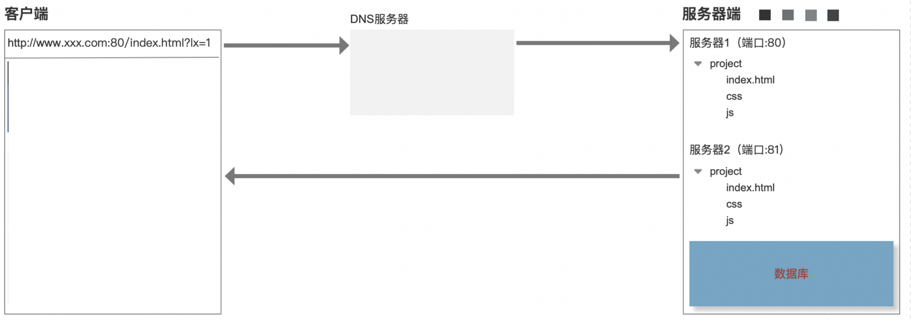
# 第一步：URL解析
- 地址解析
- 编码
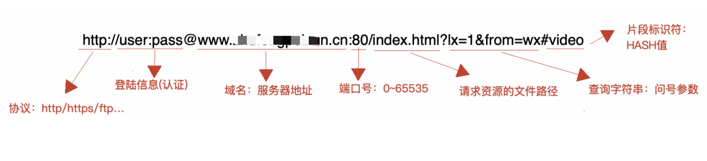
# 第二步：缓存检查
缓存位置：
Memory Cache: 内存缓存Disk Cache：硬盘缓存
- 打开网页：查找
disk cache中是否有匹配，如有则使用，如没有则发送网络请求 - 普通刷新 (
F5)：因TAB没关闭，因此memory cache是可用的，会被优先使用，其次才是disk cache - 强制刷新 (
Ctrl + F5)：浏览器不使用缓存，因此发送的请求头部均带有Cache-control: no-cache，服务器直接返回200和最新内容
强缓存 Expires / Cache-Control
浏览器对于强缓存的处理：根据第一次请求资源时返回的响应头来确定的
Expires：缓存过期时间，用来指定资源到期的时间（HTTP/1.0）Cache-Control：cache-control: max-age=2592000第一次拿到资源后的2592000秒内（30天），再次发送请求，读取缓存中的信息（HTTP/1.1）- 两者同时存在的话，
Cache-Control优先级高于Expires
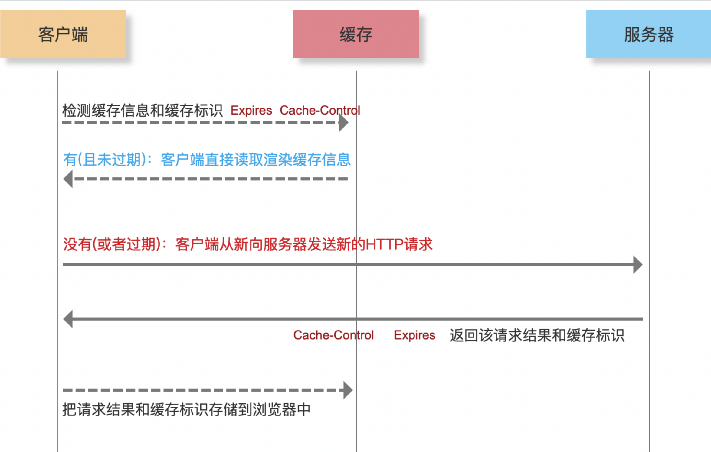
协商缓存 Last-Modified / ETag
协商缓存就是强制缓存失效后，浏览器携带缓存标识向服务器发起请求，由服务器根据缓存标识决定是否使用缓存的过程
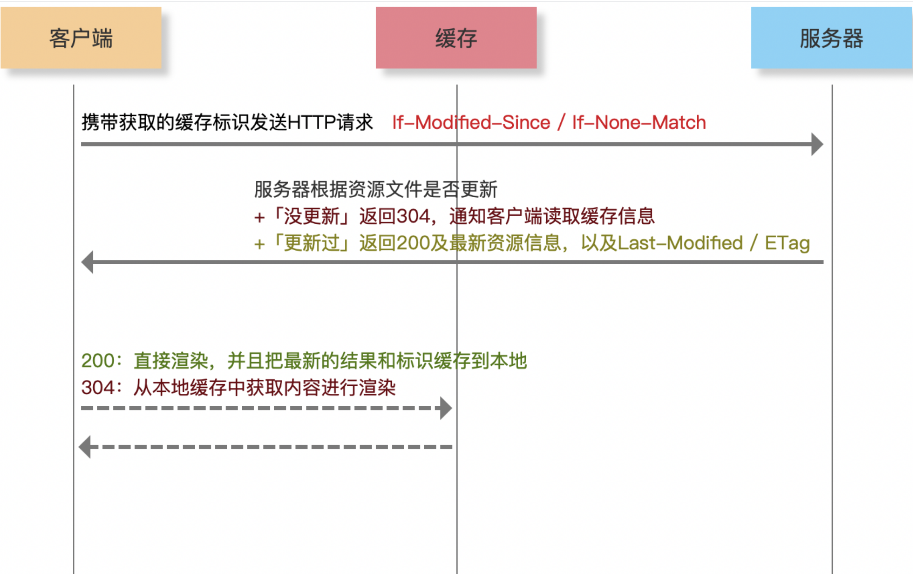
数据缓存
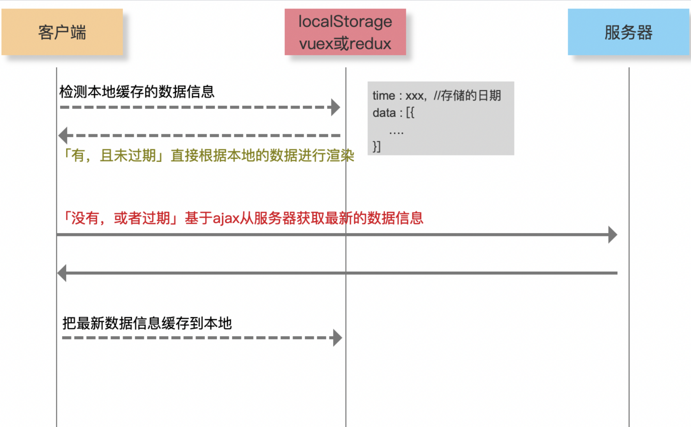
# 第三步：DNS解析
- 递归查询
- 迭代查询
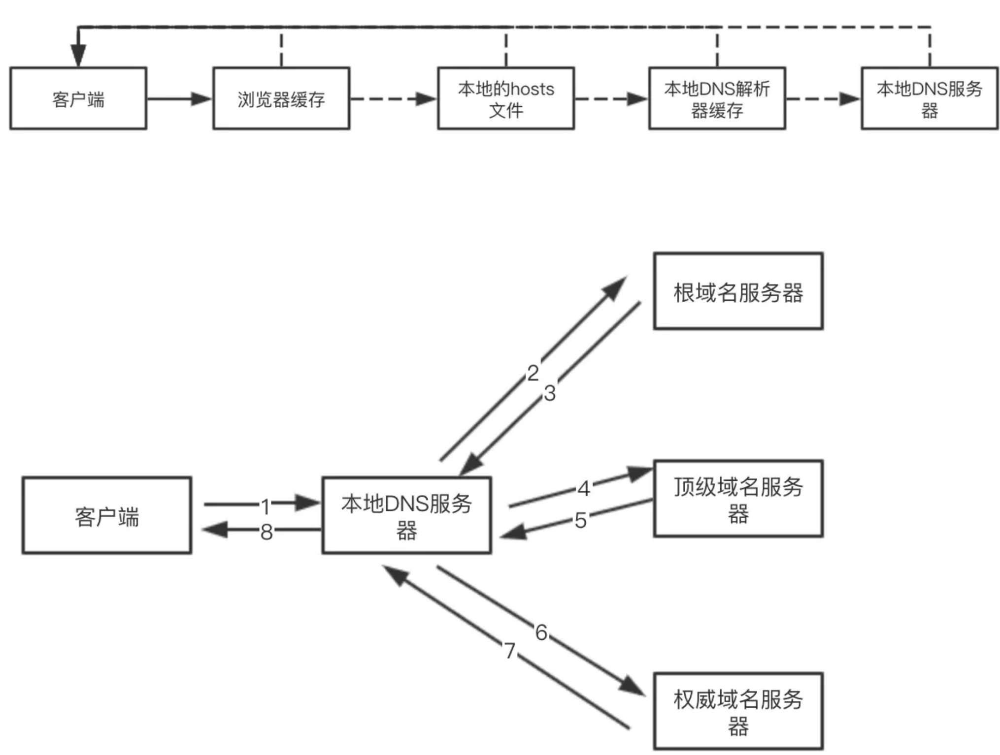
每一次
DNS解析时间预计在20~120毫秒
- 减少
DNS请求次数 DNS预获取（DNS Prefetch）
<meta http-equiv="x-dns-prefetch-control" content="on">
<link rel="dns-prefetch" href="//static.360buyimg.com"/>
<link rel="dns-prefetch" href="//misc.360buyimg.com"/>
<link rel="dns-prefetch" href="//img10.360buyimg.com"/>
<link rel="dns-prefetch" href="//d.3.cn"/>
<link rel="dns-prefetch" href="//d.jd.com"/>
服务器拆分的优势
- 资源的合理利用
- 抗压能力加强
- 提高
HTTP并发
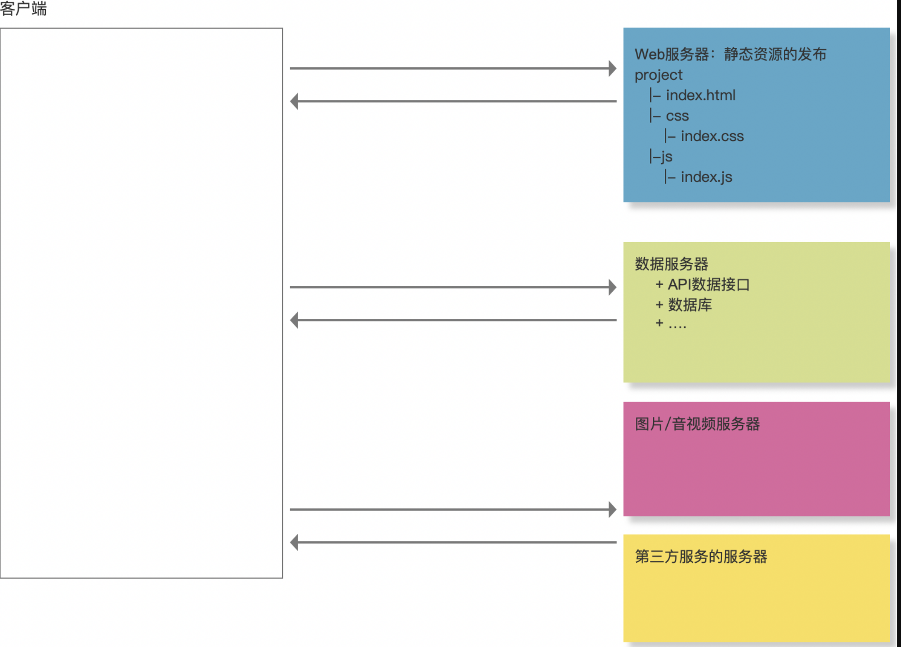
# 第四步：TCP三次握手
seq序号，用来标识从TCP源端向目的端发送的字节流，发起方发送数据时对此进行标记ack确认序号，只有ACK标志位为1时，确认序号字段才有效，ack=seq+1- 标志位
ACK：确认序号有效RST：重置连接SYN：发起一个新连接FIN：释放一个连接
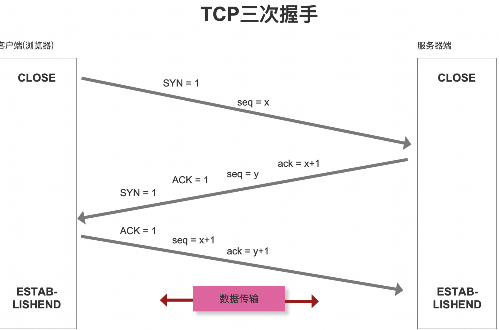
三次握手为什么不用两次，或者四次?
TCP作为一种可靠传输控制协议，其核心思想：既要保证数据可靠传输，又要提高传输的效率！
# 第五步：数据传输
HTTP报文- 请求报文
- 响应报文
- 响应状态码
200 OK202 Accepted：服务器已接受请求，但尚未处理（异步）204 No Content：服务器成功处理了请求，但不需要返回任何实体内容206 Partial Content：服务器已经成功处理了部分GET请求（断点续传Range/If-Range/Content-Range/Content-Type:”multipart/byteranges”/Content-Length….）301 Moved Permanently302 Move Temporarily304 Not Modified305 Use Proxy400 Bad Request: 请求参数有误401 Unauthorized：权限（Authorization）404 Not Found405 Method Not Allowed408 Request Timeout500 Internal Server Error503 Service Unavailable505 HTTP Version Not Supported
# 第六步：TCP四次挥手
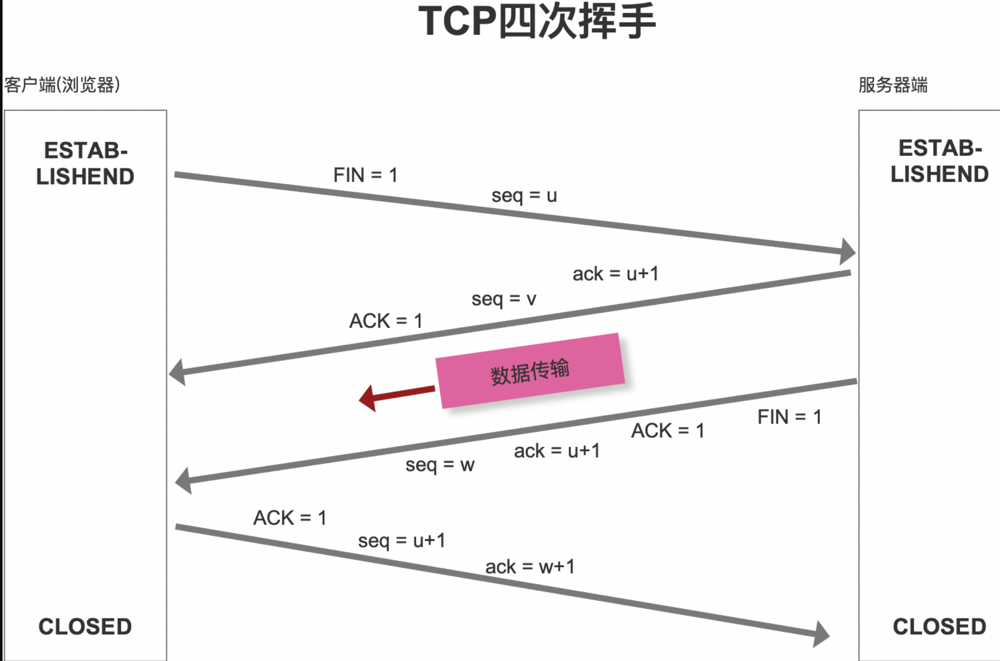
为什么连接的时候是三次握手，关闭的时候却是四次握手？
- 服务器端收到客户端的
SYN连接请求报文后，可以直接发送SYN+ACK报文 - 但关闭连接时，当服务器端收到FIN报文时，很可能并不会立即关闭链接，所以只能先回复一个ACK报文，告诉客户端：”你发的FIN报文我收到了”，只有等到服务器端所有的报文都发送完了，我才能发送FIN报文，因此不能一起发送，故需要四步握手。
# 第七步：页面渲染
# 性能优化汇总
- 利用缓存
- 对于静态资源文件实现强缓存和协商缓存（扩展：文件有更新，如何保证及时刷新？）
- 对于不经常更新的接口数据采用本地存储做数据缓存（扩展：cookie / localStorage / vuex|redux 区别？）
- DNS优化
- 分服务器部署，增加HTTP并发性（导致DNS解析变慢）
- DNS Prefetch
- TCP的三次握手和四次挥手
- Connection:keep-alive
- 数据传输
- 减少数据传输的大小
- 内容或者数据压缩（webpack等）
- 服务器端一定要开启GZIP压缩（一般能压缩60%左右）
- 大批量数据分批次请求（例如：下拉刷新或者分页，保证首次加载请求数据少）
- 减少HTTP请求的次数
- 资源文件合并处理
- 字体图标
- 雪碧图 CSS-Sprit
- 图片的BASE64
- 减少数据传输的大小
- CDN服务器“地域分布式”
- 采用
HTTP2.0
网络优化是前端性能优化的中的重点内容，因为大部分的消耗都发生在网络层，尤其是第一次页面加载，如何减少等待时间很重要“减少白屏的效果和时间”
loading人性化体验- 骨架屏：客户端骨屏 + 服务器骨架屏
- 图片延迟加载
# HTTP1.0 VS HTTP1.1 VS HTTP2.0
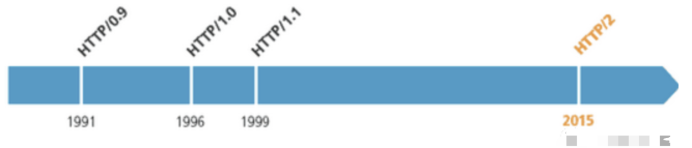
# HTTP1.0和HTTP1.1的一些区别
缓存处理，HTTP1.0中主要使用Last-Modified，Expires来做为缓存判断的标准，HTTP1.1则引入了更多的缓存控制策略：ETag，Cache-Control…带宽优化及网络连接的使用，HTTP1.1支持断点续传，即返回码是206（Partial Content）错误通知的管理，在HTTP1.1中新增了24个错误状态响应码，如409（Conflict）表示请求的资源与资源的当前状态发生冲突；410（Gone）表示服务器上的某个资源被永久性的删除…Host头处理，在HTTP1.0中认为每台服务器都绑定一个唯一的IP地址，因此，请求消息中的URL并没有传递主机名（hostname）。但随着虚拟主机技术的发展，在一台物理服务器上可以存在多个虚拟主机（Multi-homed Web Servers），并且它们共享一个IP地址。HTTP1.1的请求消息和响应消息都应支持Host头域，且请求消息中如果没有Host头域会报告一个错误（400 Bad Request）长连接，HTTP1.1中默认开启Connection： keep-alive，一定程度上弥补了HTTP1.0每次请求都要创建连接的缺点
# HTTP2.0和HTTP1.X相比的新特性
新的二进制格式（Binary Format），HTTP1.x的解析是基于文本，基于文本协议的格式解析存在天然缺陷，文本的表现形式有多样性，要做到健壮性考虑的场景必然很多，二进制则不同，只认0和1的组合，基于这种考虑HTTP2.0的协议解析决定采用二进制格式，实现方便且健壮header压缩，HTTP1.x的header带有大量信息，而且每次都要重复发送，HTTP2.0使用encoder来减少需要传输的header大小，通讯双方各自cache一份header fields表，既避免了重复header的传输，又减小了需要传输的大小服务端推送（server push），例如我的网页有一个sytle.css的请求，在客户端收到sytle.css数据的同时，服务端会将sytle.js的文件推送给客户端，当客户端再次尝试获取sytle.js时就可以直接从缓存中获取到，不用再发请求了
// 通过在应用生成HTTP响应头信息中设置Link命令
Link: </styles.css>; rel=preload; as=style, </example.png>; rel=preload; as=image
- 多路复用（
MultiPlexing）HTTP/1.0每次请求响应，建立一个TCP连接，用完关闭HTTP/1.1「长连接」 若干个请求排队串行化单线程处理，后面的请求等待前面请求的返回才能获得执行机会，一旦有某请求超时等，后续请求只能被阻塞，毫无办法，也就是人们常说的线头阻塞；HTTP/2.0「多路复用」多个请求可同时在一个连接上并行执行，某个请求任务耗时严重，不会影响到其它连接的正常执行；
# 第17题 实现vue reactive原理
// Dep module
class Dep {
static stack = []
static target = null
deps = null
constructor() {
this.deps = new Set()
}
depend() {
if (Dep.target) {
this.deps.add(Dep.target)
}
}
notify() {
this.deps.forEach(w => w.update())
}
static pushTarget(t) {
if (this.target) {
this.stack.push(this.target)
}
this.target = t
}
static popTarget() {
this.target = this.stack.pop()
}
}
// reactive
function reactive(o) {
if (o && typeof o === 'object') {
Object.keys(o).forEach(k => {
defineReactive(o, k, o[k])
})
}
return o
}
function defineReactive(obj, k, val) {
let dep = new Dep()
Object.defineProperty(obj, k, {
get() {
dep.depend()
return val
},
set(newVal) {
val = newVal
dep.notify()
}
})
if (val && typeof val === 'object') {
reactive(val)
}
}
// watcher
class Watcher {
constructor(effect) {
this.effect = effect
this.update()
}
update() {
Dep.pushTarget(this)
this.value = this.effect()
Dep.popTarget()
return this.value
}
}
// 测试代码
const data = reactive({
msg: 'aaa'
})
new Watcher(() => {
console.log('===> effect', data.msg);
})
setTimeout(() => {
data.msg = 'hello'
}, 1000)
# 第16题 异步串行 | 异步并行
// 字节面试题，实现一个异步加法
function asyncAdd(a, b, callback) {
setTimeout(function () {
callback(null, a + b);
}, 500);
}
// 解决方案
// 1. promisify
const promiseAdd = (a, b) => new Promise((resolve, reject) => {
asyncAdd(a, b, (err, res) => {
if (err) {
reject(err)
} else {
resolve(res)
}
})
})
// 2. 串行处理
async function serialSum(...args) {
return args.reduce((task, now) => task.then(res => promiseAdd(res, now)), Promise.resolve(0))
}
// 3. 并行处理
async function parallelSum(...args) {
if (args.length === 1) return args[0]
const tasks = []
for (let i = 0; i < args.length; i += 2) {
tasks.push(promiseAdd(args[i], args[i + 1] || 0))
}
const results = await Promise.all(tasks)
return parallelSum(...results)
}
// 测试
(async () => {
console.log('Running...');
const res1 = await serialSum(1, 2, 3, 4, 5, 8, 9, 10, 11, 12)
console.log(res1)
const res2 = await parallelSum(1, 2, 3, 4, 5, 8, 9, 10, 11, 12)
console.log(res2)
console.log('Done');
})()
# 第15题 以下代码输出什么
;(function b() {
b = 123
console.log(b)
})()
输出
function b() {
b = 123
console.log(b)
}
IIFE中的foo函数名相当于是使用const关键字定义的，因此没有办法对一个常量再赋值。相当于创建了一个局部的作用域，并且以const声明为常量，严格模式下会报错，无法对常量重新赋值，因此执行结果将打印出函数声明,等价于const b = function() { }- 在严格模式下，直接报
TypeError类型的错误，这类错误同数据类型相关. - 在非严格模式下，会忽略对常量的赋值
如果是匿名函数：
;(function () {
b = 123
console.log(b)
})()
则由于局部变量无法找到，继续寻找全局变量，导致输出结果为
123
# 第14题 如何让if(a == 1 && a == 2)条件成立
分析
对象转原始类型，会调用内置的
[ToPrimitive]函数，对于该函数而言，其逻辑如下：
- 如果有
Symbol.toPrimitive()方法，优先调用再返回 - 调用
valueOf()，如果转换为原始类型，则返回 - 调用
toString()，如果转换为原始类型，则返回 - 如果都没有返回原始类型，会报错
答案
var a = {
value: 0,
valueOf: function() {
this.value++;
return this.value;
}
};
console.log(a == 1 && a == 2);//true
# 第13题 异步执行顺序问题
阅读下面代码，我们只考虑浏览器环境下的输出结果，写出它们结果打印的先后顺序，并分析出原因，小伙伴们，加油哦！
console.log("AAAA");
setTimeout(() => console.log("BBBB"), 1000);
const start = new Date();
while (new Date() - start < 3000) {}
console.log("CCCC");
setTimeout(() => console.log("DDDD"), 0);
new Promise((resolve, reject) => {
console.log("EEEE");
foo.bar(100);
})
.then(() => console.log("FFFF"))
.then(() => console.log("GGGG"))
.catch(() => console.log("HHHH"));
console.log("IIII");
答案：
浏览器下 输出结果的先后顺序是
AAAA
CCCC
EEEE
IIII
HHHH
BBBB
DDDD
答案解析：这道题考察重点是 js异步执行 宏任务 微任务。
- 一开始代码执行，输出
AAAA. 1 - 第二行代码开启一个计时器t1(一个称呼)，这是一个异步任务且是宏任务，需要等到1秒后提交。
- 第四行是个while语句，需要等待3秒后才能执行下面的代码,这里有个问题，就是3秒后上一个计时器t1的提交时间已经过了，但是线程上的任务还没有执行结束，所以暂时不能打印结果，所以它排在宏任务的最前面了。
- 第五行又输出
CCCC - 第六行又开启一个计时器t2（称呼），它提交的时间是0秒（其实每个浏览器器有默认最小时间的，暂时忽略），但是之前的t1任务还没有执行，还在等待，所以t2就排在t1的后面。（t2排在t1后面的原因是while造成的）都还需要等待，因为线程上的任务还没执行完毕。
- 第七行
new Promise将执行promise函数，它参数是一个回调函数，这个回调函数内的代码是同步的，它的异步核心在于resolve和reject，同时这个异步任务在任务队列中属于微任务，是优先于宏任务执行的，(不管宏任务有多急，反正我是VIP)。所以先直接打印输出同步代码EEEE。第九行中的代码是个不存在的对象，这个错误要抛给reject这个状态，也就是catch去处理，但是它是异步的且是微任务，只有等到线程上的任务执行完毕，立马执行它，不管宏任务（计时器，ajax等）等待多久了。 - 第十四行，这是线程上的最后一个任务，打印输出
IIII - 我们先找出线程上的同步代码，将结果依次排列出来：
AAAA CCCC EEEE IIII - 然后我们再找出所有异步任务中的微任务 把结果打印出来 HHHH
- 最后我们再找出异步中的所有宏任务，这里t1排在前面t2排在后面（这个原因是while造成的），输出结果顺序是 BBBB DDDD
- 所以综上 结果是 AAAA CCCC EEEE IIII HHHH BBBB DDDD
# 第12题 微任务执行问题 async await
- 问题1
async function t1() {
let a = await "lagou";
console.log(a);
}
t1()
问题解析
await是一个表达式，如果后面不是一个promise对象，就直接返回对应的值。
所以问题1可以理解为
async function t1() {
let a = "lagou";
console.log(a);//lagou
}
t1()
- 问题2
async function t2() {
let a = await new Promise((resolve) => {});
console.log(a);//
}
t2()
问题解析
await后面如果跟一个promise对象，await将等待这个promise对象的resolve状态的值value，且将这个值返回给前面的变量，此时的promise对象的状态是一个pending状态，没有resolve状态值，所以什么也打印不了。
- 问题3
async function t3() {
let a = await new Promise((resolve) => {
resolve();
});
console.log(a);//undefined
}
t3()
await后面如果跟一个promise对象，await将等待这个promise对象的resolve状态的值value，且将这个值返回给前面的变量，此时的promise对象的状态是一个resolve状态，但是它的状态值是undefined，所以打印出undefined。
- 问题4
async function t4() {
let a = await new Promise((resolve) => {
resolve("hello");
});
console.log(a);//hello
}
t4()
await后面如果跟一个promise对象，await将等待这个promise对象的resolve状态的值，且将这个值返回给前面的变量，此时的promise对象的状态是一个resolve状态，它的状态值是hello，所以打印出hello。
- 问题5
async function t5() {
let a = await new Promise((resolve) => {
resolve("hello");
}).then(() => {
return "lala";
});
console.log(a);//lala
}
t5()
await后面如果跟一个promise对象，await将等待这个promise对象的resolve状态的值，且将这个值返回给前面的变量，此时的promise对象的状态是一个resolve状态，它的状态值是hello，紧接着后面又执行了一个then方法，then方法又会返回一个全新的promise对象，且这个then方法中的返回值会作为这个全新的promise中resolve的值，所以最终的结果是lala。
- 问题6
async function t6() {
let a = await fn().then((res)=>{return res})
console.log(a);//undefined
}
async function fn(){
await new Promise((resolve)=>{
resolve("lagou")
})
}
t6()
问题解析
async函数执行返回一个promise对象,且async函数内部的返回值会当作这个promise对象resolve状态的值
async function fn() {
return "la";
}
var p = fn();
console.log(p); //Promise {<resolved>: "la"}
//__proto__: Promise
//[[PromiseStatus]]: "resolved"
//[[PromiseValue]]: "la"
首先考虑
fn()执行返回一个promise对象，因为fn执行没有返回值，所以这个promise对象的状态resolve的值是undefined，且将这个undefined当作下一个then中回调函数的参数，所以打印的结果是undefined
- 问题7
async function t7() {
let a = await fn().then((res)=>{return res})
console.log(a);
}
async function fn(){
await new Promise((resolve)=>{
resolve("lagou")
})
return "lala"
}
t7()
首先考虑
fn()执行返回一个promise对象，因为fn()执行有返回值lala，所以这个promise对象的状态resolve的值是lala，且将这个lala当作下一个then中回调函数的参数，所以打印的结果是lala。
注意细节
- async函数执行的返回结果是一个promise对象，这个函数的返回值是这个promise状态值resolve的值
- await后面如果不是一个promise对象，将直接返回这个值
- await后面如果是一个promise对象，将会把这个promise的状态resolve的值返回出去。
- 以上没有考虑reject状态。
# 第11题 this指向问题
1 分析代码下面输出什么
function Foo() {
getName = function () {
console.log(1);
};
return this;
}
Foo.getName = function () {
console.log(2);
};
Foo.prototype.getName = function () {
console.log(3);
};
var getName = function () {
console.log(4);
};
function getName() {
console.log(5);
}
Foo.getName();
Foo().getName();
getName();
new Foo.getName();
new Foo().getName();
new new Foo().getName();
- Foo.getName();
调用Foo的静态方法，所以，打印2
- Foo().getName();
Foo()就是普通函数调用，返回的this是window，后面调用window.getName()而window下的getName在Foo()中调用getName被重新赋值,所以,打印1
- getName();
在执行过
Foo().getName()的基础上，所以getName=function(){console.log(1)},所以,打印1，[如果getName()放在Foo().getName()上执行打印结果为4]
- new Foo.getName();
构造器私有属性的getName(),所以,打印2
- new Foo().getName();
原型上的getName()，打印3
- new new Foo().getName()
- 首先
new Foo()得到一个空对象{} - 第二步向空对象中添加一个属性getName，值为一个函数
- 第三步
new {}.getName() - 等价于
var bar = new (new Foo().getName)(); console.log(bar) - 先
new Foo得到的实例对象上的getName方法，再将这个原型上getName方法当做构造函数继续new ，所以执行原型上的方法,打印3
2 写出打印结果，并分析出原因
var length = 10;
function fn() {
console.log(this.length);
}
var obj = {
length: 5,
method: function(fn) {
fn();
arguments[0]();
}
};
obj.method(fn, 1);
- 解析：首先，我们在全局定义了一个变量
length、一个对象obj和一个函数fn，length赋值为10。接下来是fn函数，输出this.length。对象obj中，obj.length是5，obj.method是一个函数。method函数里面的形参也是一个函数，这个函数里面调用了fn函数，arguments是一个伪数组，代表method函数实际接收到的参数列表，所以arguments[0] ()就代表了调用arguments里的第一项。obj.method(fn, 1)代表的就是调用obj当中的method函数，并且传递了两个参数，fn和1。 - 分析完了代码的含义，我们来看输出结果。
method函数当中调用的fn函数是全局当中的函数，所以this指向的是window，this.length就是10。上面说了，arguments[0] ()代表的是调用arguments里面的第一项，也就是传参进来的fn，所以这个this指向的是arguments，method函数接收的参数是两个，所以arguments.length就是2。最后的输出结果就是10 2
3 写出打印结果，并分析出原因
function a(xx){
this.x = xx;
return this;
};
var x = a(5);
var y = a(6);
console.log(x.x);
console.log(y.x);
- 解析：首先，我们在全局定义了一个变量
x、一个变量y和一个函数a，函数a当中的this.x等于接收到的参数，返回this，这里要注意，返回的不是this.x，而是this。接下来我们给x赋值，值为a(5)，又给y进行赋值，值为a(6)。最后，我们输出x.x，y.x。 - 分析完代码的含义，我们来看输出结果。
a函数传了一个参数5，那么this.x就被赋值为了5，函数a的this指向的是window，也就是window.x = 5。上面我们说过，这个函数返回的是this，也就是this指向的window，x = a(5)就相当于window.x = window，此时的x被赋值为了window。下面又执行了y = a(6)，也就是说，x的值再次发生了改变，边为了6，y则被赋值为了window。console.log(x.x)就相当于console.log(6.x)，输出的自然是undefined。console.log(y.x)，输出的相当于是console.log(window.x)，得到的值自然是6。最后输出的结果为undefined 6
# 第10题 promise执行问题
//第一种
promise.then((res) => {
console.log('then:', res);
}).catch((err) => {
console.log('catch:', err);
})
//第二种
promise.then((res) => {
console.log('then:', res);
}, (err) => {
console.log('catch:', err);
})
- 第一种
catch方法可以捕获到catch之前整条promise链路上所有抛出的异常 - 第二种 then 方法的第二个参数捕获的异常依赖于上一个 Promise 对象的执行结果
promise.then(successCb, faildCd)接收两个函数作为参数，来处理上一个promise对象的结果。then f方法返回的是 promise 对象。第一种链式写法，使用catch，相当于给前面一个then方法返回的promise 注册回调，可以捕获到前面then没有被处理的异常。第二种是回调函数写法，仅为为上一个promise 注册异常回调。
如果是promise内部报错 reject 抛出错误后，then 的第二个参数就能捕获得到，如果then的第二个参数不存在，则catch方法会捕获到。
如果是then的第一个参数函数 resolve 中抛出了异常，即成功回调函数出现异常后，then的第二个参数reject 捕获捕获不到，catch方法可以捕获到。
# 第9题 promise解决并发请求
var urls = [
'http://jsonplaceholder.typicode.com/posts/1',
'http://jsonplaceholder.typicode.com/posts/2',
'http://jsonplaceholder.typicode.com/posts/3',
'http://jsonplaceholder.typicode.com/posts/4',
'http://jsonplaceholder.typicode.com/posts/5',
'http://jsonplaceholder.typicode.com/posts/6',
'http://jsonplaceholder.typicode.com/posts/7',
'http://jsonplaceholder.typicode.com/posts/8',
'http://jsonplaceholder.typicode.com/posts/9',
'http://jsonplaceholder.typicode.com/posts/10'
]
function loadDate (url) {
return new Promise((resolve, reject) => {
const xhr = new XMLHttpRequest()
xhr.onload = function () {
resolve(xhr.responseText)
}
xhr.open('GET', url)
xhr.send()
})
}
在 urls 数组中存放了 10 个接口地址。同时还定义了一个 loadDate 函数，这个函数接受一个 url 参数，返回一个 Promise 对象，该 Promise 在接口调用成功时返回 resolve，失败时返回 reject。
- 要求：任意时刻，同时下载的链接数量不可以超过 3 个。
- 试写出一段代码实现这个需求，要求尽可能快速地将所有接口中的数据得到。
解题思路
按照题意我们可以这样做，首先并发请求 3 个
url中的数据，当其中一条url请求得到数据后，立即发起对一条新url上数据的请求，我们要始终让并发数保持在 3 个，直到所有需要加载数据的url全部都完成请求并得到数据。
用 Promise 实现的思路就是，首先并发请求3个 url ，得到 3 个 Promise ，然后组成一个叫 promises 的数组。再不断的调用 Promise.race 来返回最快改变状态的 Promise ，然后从数组promises中删掉这个 Promise 对象，再加入一个新的 Promise，直到所有的 url 被取完，最后再使用 Promise.all 来处理一遍数组promises中没有改变状态的 Promise。
参考答案
var urls = [
'http://jsonplaceholder.typicode.com/posts/1',
'http://jsonplaceholder.typicode.com/posts/2',
'http://jsonplaceholder.typicode.com/posts/3',
'http://jsonplaceholder.typicode.com/posts/4',
'http://jsonplaceholder.typicode.com/posts/5',
'http://jsonplaceholder.typicode.com/posts/6',
'http://jsonplaceholder.typicode.com/posts/7',
'http://jsonplaceholder.typicode.com/posts/8',
'http://jsonplaceholder.typicode.com/posts/9',
'http://jsonplaceholder.typicode.com/posts/10'
]
function loadDate (url) {
return new Promise((resolve, reject) => {
const xhr = new XMLHttpRequest()
xhr.onload = function () {
resolve(xhr.responseText)
}
xhr.open('GET', url)
xhr.send()
})
}
function limitLoad(urls, handler, limit) {
// 对数组进行一个拷贝
const sequence = [].concat(urls)
let promises = [];
//实现并发请求达到最大值
promises = sequence.splice(0, limit).map((url, index) => {
// 这里返回的 index 是任务在数组 promises 的脚标
//用于在 Promise.race 后找到完成的任务脚标
return handler(url).then(() => {
return index
});
});
// 利用数组的 reduce 方法来以队列的形式执行
return sequence.reduce((last, url, currentIndex) => {
return last.then(() => {
// 返回最快改变状态的 Promise
return Promise.race(promises)
}).catch(err => {
// 这里的 catch 不仅用来捕获前面 then 方法抛出的错误
// 更重要的是防止中断整个链式调用
console.error(err)
}).then((res) => {
// 用新的 Promise 替换掉最快改变状态的 Promise
promises[res] = handler(sequence[currentIndex]).then(
() => { return res });
})
}, Promise.resolve()).then(() => {
return Promise.all(promises)
})
}
limitLoad(urls, loadDate, 3)
/*
因为 loadDate 函数也返回一个 Promise
所以当 所有图片加载完成后可以继续链式调用
limitLoad(urls, loadDate, 3).then(() => {
console.log('所有url数据请求成功');
}).catch(err => {
console.error(err);
})
*/
# 第8题 跨域问题
在你开发的过程中，什么情况下会遇到跨域问题，你是怎么解决的？
- API跨域可以通过服务器上nginx反向代理
- 本地webpack dev server可以设置 proxy，
new Image, 设src 的时候，图片需要设置Cors
cors需要后台配合设置HTTP响应头，如果请求不是简单请求（1. method：get，post，2. content-type：三种表单自带的content-type，3. 没有自定义的HTTP header），浏览器会先发送option预检请求，后端需要响应option请求，然后浏览器才会发送正式请求，cors通过白名单的形式允许指定的域发送请求
jsonp是浏览器会放过 img script标签引入资源的方式。所以可以通过后端返回一段执行js函数的脚本，将数据作为参数传入。然后在前端执行这段脚本。双方约定一个函数的名称。
联调的时候会需要跨域，线上前端站点域和后台接口不一致也需要跨域，开发时跨域可以通过代理服务器来转发请求，因为跨域本身是浏览器对请求的限制，常见的跨域处理还有JSONP和cors，jsonp是利用脚本资源请求本身就可以跨域的特性，通过与请求一起发送回调函数名，后台返回script脚本直接执行回调，但是由于资源请求是get类型，请求参数长度有限制，也不能进行post请求。cors需要后台配合设置HTTP响应头，如果请求不是简单请求（1. method：get，post，2. content-type：三种表单自带的content-type，3. 没有自定义的HTTP header），浏览器会先发送option预检请求，后端需要响应option请求，然后浏览器才会发送正式请求，cors通过白名单的形式允许指定的域发送请求
同源策略只是浏览器客户端的防护机制，当发现非同源HTTP请求时会拦截响应，但服务器依然处理了这个请求。 服务器端不拦截，所以在同源服务器下做代理，可以实现跨域。
# 第7题 下面输出什么
var length = 10
function fn(){
console.log(this.length)
}
var obj = {
length:5,
method:function(fn){
fn()
arguments[0]()
console.log(arguments,'arguments')
}
}
obj.method(fn) // 10 1
obj.method(fn, 123) // 10 2
var a = {n:1}
var b = a
a = {n:2}
a.x = a
console.log(a.x) // {n:2, x:{n:2,x:{n:2}}}
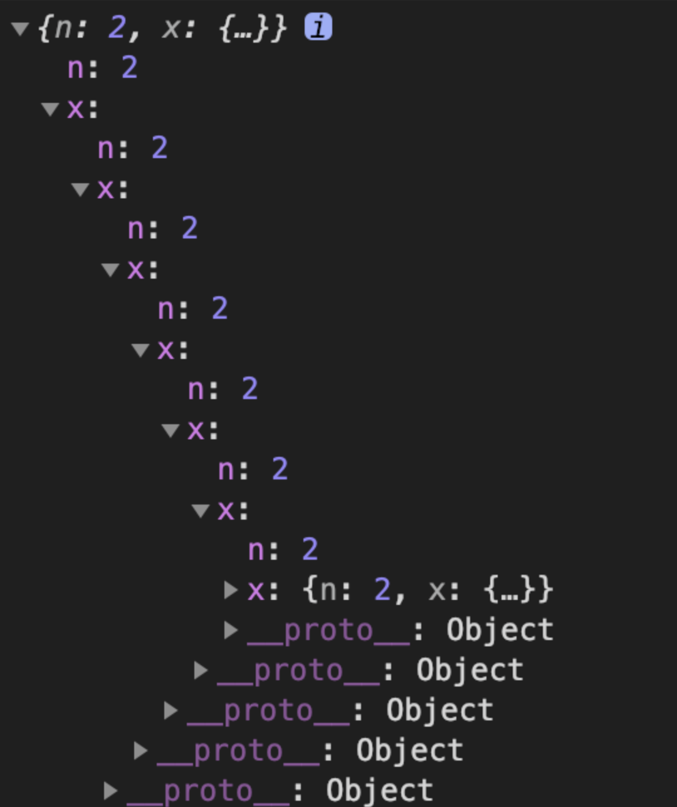
# 第6题 验证回文串
给定一个字符串，验证它是否是回文串，只考虑字母和数字字符，可以忽略字母的大小写。
说明：本题中，我们将空字符串定义为有效的回文串。
示例1
输入: "A man, a plan, a canal: Panama"
输出: true
示例 2:
输入: "race a car"
输出: false
思路
首先，去除字符串中的非字母和数字，然后，利用数组将字符串翻转，再和原字符串进行比较，即可得到结果。
详解
- 将传入的字符串，利用
toLowerCase()方法统一转化为小写，再利用正则表达式/[ ^ A-Za-z0-9]/g在字符串中去除非字母和数字，得到字符串arr。 - 将字符串
arr转换为数组，利用数组的方法反转数组，再将数组转为字符串newArr。 - 将字符串
arr和 字符串newArr进行比较，相等即为回文串，不相等则不为回文串
/**
* @param {string} s
* @return {boolean}
*/
const isPalindrome = (s) => {
// 方便比较,统一转化为小写,并去除非字母和数字
const arr = s.toLowerCase().replace(/[^A-Za-z0-9]/g, '');
// 将新字符串转换为数组,利用数组的方法获得反转的字符串
const newArr = arr.split('').reverse().join('');
// 将2个字符进行比较得出结果
return arr === newArr;
};
# 第5题 写一个函数来判断它是否是 3 的幂次方
给定一个整数，写一个函数来判断它是否是 3 的幂次方
输入: 27
输出: true
输入: 45
输出: false
题目分析
- 3 的幂，顾名思义，需要判断当前数字是否可以一直被 3 整除
- 特殊情况：如果 n === 1，即 3 的 0 次幂的情况，应输出 true
/**
* @param {number} n
* @return {boolean}
*/
const isPowerOfThree = function (n) {
if (n < 1) {
return false;
}
while (n > 1) {
// 如果该数字不能被 3 整除，则直接输出 false
if (n % 3 !== 0) {
return false;
} else {
n = n / 3;
}
}
return true;
};
递归求解
- 思路
或许，我们可以考虑使用递归的方法实现。递归的思路类似于循环，只不过将循环体改为方法的递归调用。
- 判断特殊情况
n === 1时，直接返回 true - 判断特殊情况
n <= 0时，直接返回 false - 若待定值 n 可以被 3 整除，则开始递归
- 若不满足上述条件，则返回 false
/**
* @param {number} n
* @return {boolean}
*/
const isPowerOfThree = function (n) {
// n === 1，即 3 的 0 次幂，返回 true
if (n === 1) {
return true;
}
if (n <= 0) {
return false;
}
if (n % 3 === 0) {
// 递归调用 isPowerOfThree 方法
return isPowerOfThree(n / 3);
}
return false;
};
# 第4题 旋转数组
给定一个数组，将数组中的元素向右移动 k 个位置，其中 k 是非负数
输入: [1,2,3,4,5,6,7] 和 k = 3
输出: [5,6,7,1,2,3,4]
解释:
向右旋转 1 步: [7,1,2,3,4,5,6]
向右旋转 2 步: [6,7,1,2,3,4,5]
向右旋转 3 步: [5,6,7,1,2,3,4]
- 首先计算出需要循环移动的次数；
- 通过数组的
unshift()和pop()方法实现旋转，循环执行k次。
unshift()方法将把它的参数插入数组的头部，并将已经存在的元素顺次地移到较高的下标处，该方法不会创建新数组，而是直接修改原数组。pop()方法将删除数组的最后一个元素，把数组长度减 1，并且返回它删除的元素的值
/**
* @param {number[]} nums
* @param {number} k
* @return {void} Do not return anything, modify nums in-place instead.
*/
const rotate = function (nums, k) {
const l = nums.length;
k = k % l;
for (let i = 0; i < k; i++) {
nums.unshift(nums.pop());
}
};
方法二
- 首先还是计算出需要截取的数组元素的长度；
- 通过数组的
splice()方法截取需要移动的元素，然后使用扩展运算符‘...‘将截取的元素当作参数，通过unshift()方法将截取的 元素放到数组的前边。
- splice() 方法可删除从 index 处开始的零个或多个元素，然后返回被删除的项目。
- 数组的扩展运算符...相当于将数组展开,主要的使用场景是用于数组复制、合并等。
- unshift() 方法的第一个参数将成为数组的 index 为0的新元素，如果还有第二个参数，它将成为 index 为1的新元素，以此类推。
/**
* @param {number[]} nums
* @param {number} k
* @return {void} Do not return anything, modify nums in-place instead.
*/
const rotate = function (nums, k) {
const l = nums.length;
k = k % l;
nums.unshift(...nums.splice(l - k, k));
};
# 第3题 修改嵌套层级很深对象的 key
// 有一个嵌套层次很深的对象，key 都是 a_b 形式 ，需要改成 ab 的形式，注意不能用递归。
const a = {
a_y: {
a_z: {
y_x: 6
},
b_c: 1
}
}
// {
// ay: {
// az: {
// yx: 6
// },
// bc: 1
// }
// }
方法1：序列化 JSON.stringify + 正则匹配
const regularExpress = (obj) => {
try {
const str = JSON.stringify(obj).replace(/_/g, "");
return JSON.parse(str);
} catch (error) {
return obj;
}
};;
方法2：递归
const recursion = (obj) => {
const keys = Object.keys(obj);
keys.forEach((key) => {
const newKey = key.replace(/_/g, "");
obj[newKey] = recursion(obj[key]);
delete obj[key];
});
return obj;
};
# 第2题 只出现一次的数字
给定一个非空整数数组，除了某个元素只出现一次以外，其余每个元素均出现两次。找出那个只出现了一次的元素。
示例 1:
输入: [2,2,1]
输出: 1
示例 2:
输入: [4,1,2,1,2]
输出: 4
- 遍历数组，由于需要返回值，这里使用map方法
- 使用过滤函数，过滤数组中值与当前遍历的元素的值相同的元素
- 现在得到了一个存在多个集合的数组，而数组中唯一值的那个元素的集合肯定值存在它自己
- 查询这个集合中长度只有1的集合，再取这个集合的第一个元素，即是只出现一次的数字
const singleNumber = (nums) => {
const numsGroup = nums.map(num => nums.filter(v => v === num));
return numsGroup.find(num => num.length === 1)[0];
};
# 第1题 两数之和
给定一个整数数组nums和一个目标值target，请你在该数组中找出和为目标值的那两个整数，并返回他们的数组下标。
示例
给定 nums = [2, 7, 11, 15], target = 9
因为 nums[0] + nums[1] = 2 + 7 = 9
所以返回 [0, 1]
- 遍历每个元素 x
- 并查找是否存在一个值与
target - x相等的目标元素
const twoSum = function (nums, target) {
for (let i = 0; i < nums.length; i++) {
for (let j = i + 1; j < nums.length; j++) {
if (nums[j] === target - nums[i]) {
return [i, j];
}
}
}
};